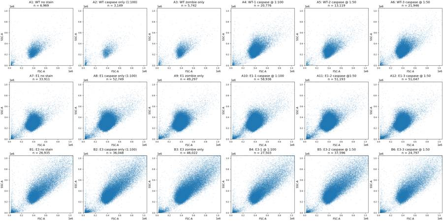
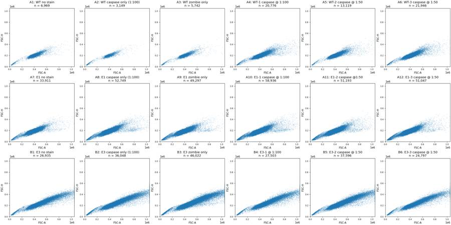
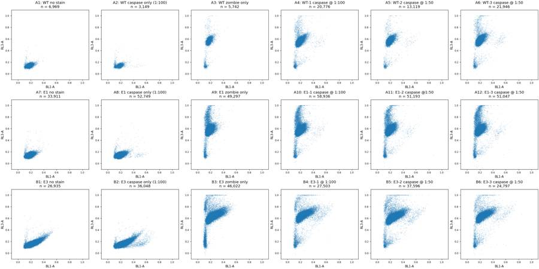
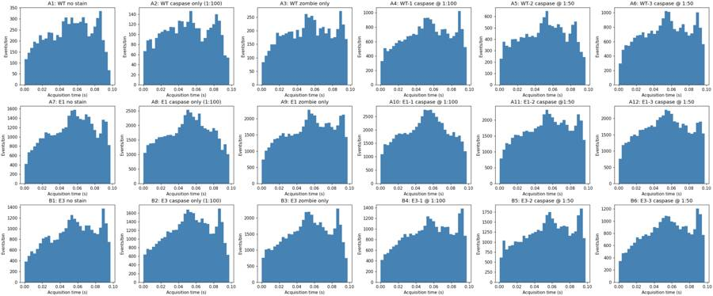
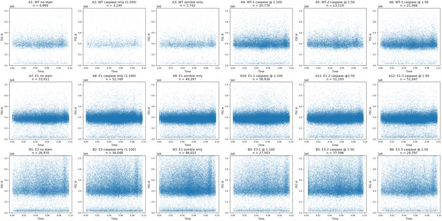
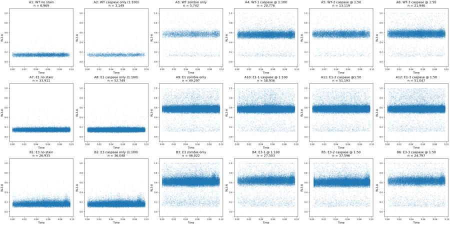
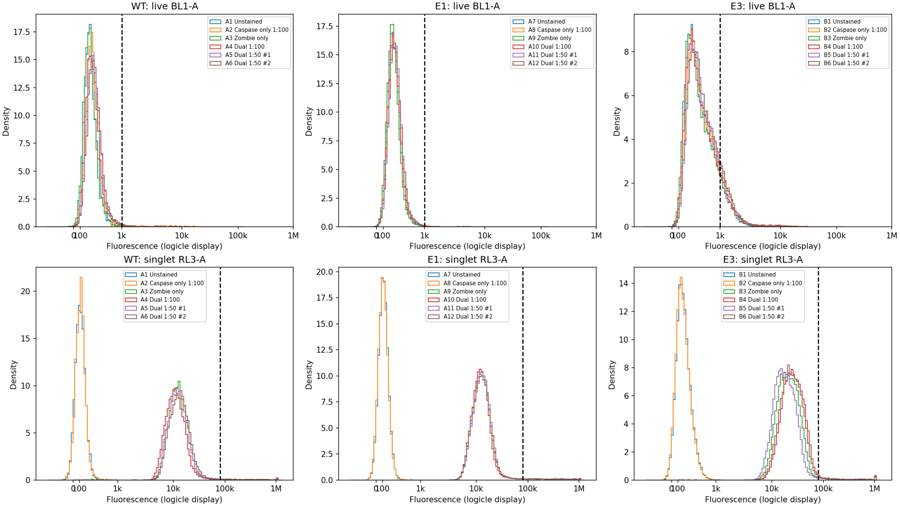
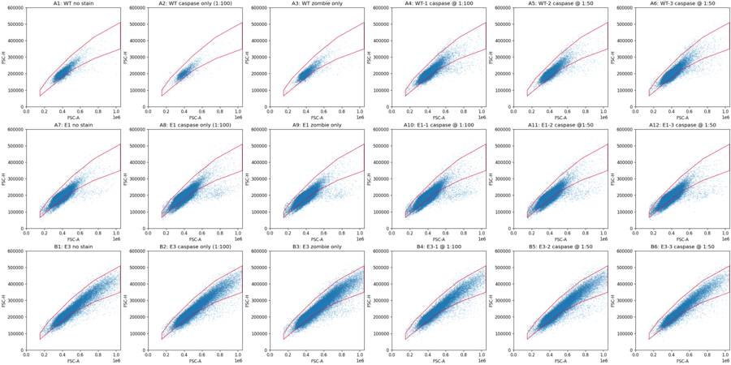
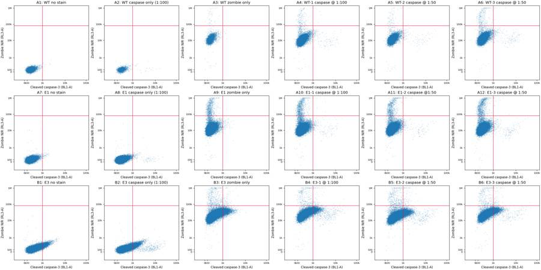
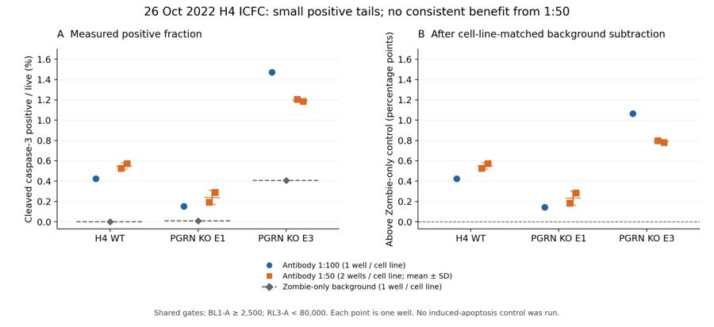

B2_flowkit · GPT-6 Astra · attempt auoHdKx
Batch fk1 · job fk1_B_EXP22004082_26_Oct_2022_flowkit_gpt-6-astra · trial B_EXP22004082_26_Oct_2022_flowki__auoHdKx. Long tool outputs are cut at 6,000 characters.
Score
0.66
0.66
Minutes
10.6
10.6
Agent cost
$3.96
$3.96
Steps
22
22
Screenshots / images
11
11
1
task prompt (instruction.md)
<environment_context> <cwd>/task</cwd> <shell>bash</shell> <current_date>2026-11-10</current_date> <timezone>Etc/UTC</timezone> <filesystem><workspace_roots><root>/task</root></workspace_roots><permission_profile type="disabled"><file_system type="unrestricted" /></permission_profile></filesystem> </environment_context>
2
user message
# Analyse the 26-Oct-2022 H4 caspase ICFC plate, answer the plan's question, recommend the next step
You are the analyst for this experiment: analyse the plate, answer the plan's question, and recommend the next step.
## Inputs (read-only)
| Path | Content |
|---|---|
| `/task/inputs/plan.md` | Notebook text up to this run: background, objective, materials, protocol, cytometer settings, plate maps |
| `/task/inputs/plate_layout.csv` | One row per FCS file: `file, well, sample, cell_line` (sample = plate-map label as written in the notebook) |
| `/task/inputs/raw/` | 18 FCS files (Attune NxT, FCS 3.1), unchanged |
## Environment
- **All gating is done with FlowKit**, including all population counts.
- Graders re-apply the gates in your saved gates to the raw files and check that they reproduce your counts.
- **Channel names.** The channel names stored in the FCS files are labels stored inside the FCS files, and they may be out of date. Work out which detector carries which reagent from the reagents and cytometer settings in `plan.md`.
- **Time budget:** 4 hours.
## Deliverables (all in `/task/outputs/`)
| Path | Content |
|---|---|
| `gates.xml` | Your gating strategy as GatingML 2.0, written with `flowkit.export_gatingml` (see *Software*). It must load with `flowkit.parse_gating_xml`. One gate per reported population, named exactly as the population. |
| `counts.csv` | Per file × population counts |
| `flags.csv` | Per-file QC decision |
| `condition_summary.csv` | Per-condition summary of the metric you use to answer the question |
| `figure.png` | Main result chart |
| `report.md` | Written analysis |
| `answer.json` | Structured answer and decision |
### `gates.xml`
- Your gating strategy as GatingML 2.0, written with `flowkit.export_gatingml` (see *Software*). It must load with `flowkit.parse_gating_xml("/task/outputs/gates.xml")`.
- Every population in `counts.csv` except `all_events` must be a gate in this file whose name is identical to the population name.
### `counts.csv`
- **Columns, in this order:** `file,well,population,role,parent,count,pct_of_parent`
- **One row per FCS file × population.** Cover all 18 files, with the same set of populations for every file.
- `file`: the exact FCS file name. `well`: the well from `plate_layout.csv`.
- **The `all_events` row.** Each file has one row with population `all_events`, role `other`, parent `none`, and an empty `pct_of_parent`.
- **`role`** is one of `cells`, `singlets`, `live`, `marker_positive`, `other`.
- Each of `cells`, `singlets`, `live` and `marker_positive` must be used by exactly one population, and that population must be the same in every file.
- Any additional populations use `other`.
- `parent`: the name of the parent population (`all_events` for the first gate).
- `count`: an integer event count from the full data.
- `pct_of_parent`: 100 × count / parent count. Leave it empty when the parent count is 0.
### `flags.csv`
- **Columns, in this order:** `file,well,issue_type,evidence,decision`
- One row per FCS file, covering all 18 files.
- `issue_type` is one of `none`, `clog`, `ran_dry`, `too_few_events`, `saturation`, `bad_control`, `mislabel`, `other`.
- `decision` is one of `keep`, `keep_with_note`, `exclude`. Rows with `issue_type` = `none` use `keep`.
- `evidence` is required whenever `issue_type` is not `none`, and it must cite at least one number observed in the data.
- Flag any well whose data should not be used, with evidence.
### `condition_summary.csv`
- **Columns, in this order:** `condition,wells,n_wells_used,mean,sd,metric_definition,normalisation_applied`
- One row per condition. You name the conditions.
- `wells`: the plate wells used for that condition, separated by `;`, using the well IDs from `plate_layout.csv`.
- `n_wells_used`: an integer equal to the number of wells listed.
- `mean`, `sd`: numbers computed across the listed wells. Leave `sd` empty if `n_wells_used` = 1.
- `metric_definition`: the metric as numerator population / denominator population, with units.
- `normalisation_applied`: the normalisation as an explicit formula, or `none`.
### `figure.png`
- The chart that shows the main result.
### `report.md`
- Use these level-2 headings, in this order: `## Question`, `## Methods`, `## Results`, `## Conclusion`, `## Caveats`, `## Recommendation`.
### `answer.json`
```
{
"question": str,
"comparisons": [
{"comparison": str, "a": <condition>, "b": <condition>,
"direction": "increase" | "decrease" | "no_clear_change",
"magnitude": str, "confidence": "high" | "medium" | "low"}
],
"overall_answer": "yes: …" | "partial: …" | "no: …",
"assay_verdict": "fit_for_purpose" | "needs_optimisation" | "not_fit_for_purpose",
"next_action": <ACTION>,
"next_change": {"what": str, "from": str, "to": str, "why": str},
"excluded_wells": [well IDs],
"caveats": [str]
}
```
- **`comparisons`**: at least one item.
- `a` and `b` must be `condition` values from `condition_summary.csv`.
- `direction` describes b relative to a (b − a).
- **`overall_answer`** starts with `yes:`, `partial:` or `no:`.
- **`next_action`** is one of: `proceed_as_planned`, `repeat_unchanged`, `repeat_with_change`, `optimise_reagent_or_setting`, `change_treatment_or_timing`, `switch_assay`, `stop`.
- `next_change`: the change you recommend, as an object: `what` (the step, reagent or condition to change), `from` (its value as run), `to` (the value you recommend) and `why`. Use empty strings if you recommend no change.
- **`excluded_wells`**: exactly the wells with `decision` = `exclude` in `flags.csv`.
## Software (FlowKit version of this task)
- **Python 3 with FlowKit 1.2.3** (plus flowio, numpy, pandas, scipy, matplotlib, openpyxl) is installed. There is no graphical analysis program.
- **Load** each file with `flowkit.Sample(path)`. Build **one** `flowkit.GatingStrategy` for all wells, with `flowkit.Dimension` and `flowkit.gates.RectangleGate`, `PolygonGate` or `EllipsoidGate` (no quadrant or Boolean gates).
- **Gate names** must be valid XML IDs: letters, digits and underscores, starting with a letter (no spaces or `+`).
- **One gate per reported population**, named exactly as the population and nested under its parent population (the first population's gate sits at the root). A population's events are its own gate within its parent.
- **Compensation.** Your choice. Every gate dimension must state its `compensation_ref` (`"uncompensated"`, `"FCS"` for the file's own spillover matrix, or the id of a matrix you add to the strategy).
- **Channels.** FlowKit gate dimensions use the detector ID (`$PnN`, e.g. `BL1-A`), not the text label.
- **Transforms.** You may draw gates on transformed axes (for example `flowkit.transforms.LogicleTransform`, added with `add_transform` and referenced by `transformation_ref`).
- **Save** the strategy with `flowkit.export_gatingml(strategy, open("/task/outputs/gates.xml", "wb"))` and check that it reloads with `flowkit.parse_gating_xml`.
- **Counts.** `counts.csv` must be the counts these saved gates give on each file (`strategy.gate_sample(sample)`), with no per-well changes.
- **Looking at data.** Save plots as PNG files and open the image files to view them.
---
## How you work
You work in a **terminal** (bash, working directory `/task`).
- **Inputs** are in `/task/inputs/` (read-only). **Write every deliverable to `/task/outputs/`.** Only that folder is collected for grading.
- **Limits.** There is no limit on the number of actions; the only limit is the time budget above. Save `gates.xml` and your output files early and often.
3
agent
I’ll read the plan to identify the intended comparison and detector mapping, inspect the plate for acquisition problems, then apply one FlowKit gating strategy across all 18 files. I’ll save the gates and counts alongside the result, interpretation, and next-step recommendation.
tool call · exec
const r = await tools.exec_command({cmd:"pwd && rg --files -g 'AGENTS.md' -g '*' /task/inputs /task | head -80",max_output_tokens:5000});text(r);
text(ALL_TOOLS.filter(x=>/search|browse|python|terminal/i.test(x.name+" "+x.description)).map(x=>({name:x.name,description:x.description.slice(0,120)})).slice(0,30));
tool output
Script completed
Wall time 0.1 seconds
Output:
{"chunk_id":"eed801","wall_time_seconds":0.00000443,"exit_code":0,"original_token_count":637,"output":"/task\n/task/inputs/plate_layout.csv\n/task/inputs/plate_layout.csv\n/task/inputs/plan.md\n/task/inputs/plan.md\n/task/inputs/raw/Caspase_h4_mlk(4)_caspase_Group_A5_wt-2_1-50.fcs\n/task/inputs/raw/Caspase_h4_mlk(4)_caspase_Group_A6_wt3_1-50.fcs\n/task/inputs/raw/Caspase_h4_mlk(4)_caspase_Group_A3_Wt_zombie.fcs\n/task/inputs/raw/Caspase_h4_mlk(4)_caspase_Group_B6_E3-3-1-50.fcs\n/task/inputs/raw/Caspase_h4_mlk(4)_caspase_Group_A4_Wt-1_1-100.fcs\n/task/inputs/raw/Caspase_h4_mlk(4)_caspase_Group_A10_E1-1_1-100.fcs\n/task/inputs/raw/Caspase_h4_mlk(4)_caspase_Group_A2_Wt_caspase_1-100.fcs\n/task/inputs/raw/Caspase_h4_mlk(4)_caspase_Group_B4_E3-1_1-100.fcs\n/task/inputs/raw/Caspase_h4_mlk(4)_caspase_Group_B1_E3_no stain.fcs\n/task/inputs/raw/Caspase_h4_mlk(4)_caspase_Group_A1_WT_no stain.fcs\n/task/inputs/raw/Caspase_h4_mlk(4)_caspase_Group_B3_E3_zombie.fcs\n/task/inputs/raw/Caspase_h4_mlk(4)_caspase_Group_A11_E1-2_1-50.fcs\n/task/inputs/raw/Caspase_h4_mlk(4)_caspase_Group_B2_E3_caspase_1-100.fcs\n/task/inputs/raw/Caspase_h4_mlk(4)_caspase_Group_A12_E1-3_1-50.fcs\n/task/inputs/raw/Caspase_h4_mlk(4)_caspase_Group_A7_E1_no stain.fcs\n/task/inputs/raw/Caspase_h4_mlk(4)_caspase_Group_A9_E1_zombie.fcs\n/task/inputs/raw/Caspase_h4_mlk(4)_caspase_Group_A8_E1_caspase_1-100.fcs\n/task/inputs/raw/Caspase_h4_mlk(4)_caspase_Group_B5_E3-2_1-50.fcs\n/task/inputs/raw/Caspase_h4_mlk(4)_caspase_Group_A1_WT_no stain.fcs\n/task/inputs/raw/Caspase_h4_mlk(4)_caspase_Group_B3_E3_zombie.fcs\n/task/inputs/raw/Caspase_h4_mlk(4)_caspase_Group_A11_E1-2_1-50.fcs\n/task/inputs/raw/Caspase_h4_mlk(4)_caspase_Group_B2_E3_caspase_1-100.fcs\n/task/inputs/raw/Caspase_h4_mlk(4)_caspase_Group_A12_E1-3_1-50.fcs\n/task/inputs/raw/Caspase_h4_mlk(4)_caspase_Group_A7_E1_no stain.fcs\n/task/inputs/raw/Caspase_h4_mlk(4)_caspase_Group_A9_E1_zombie.fcs\n/task/inputs/raw/Caspase_h4_mlk(4)_caspase_Group_A8_E1_caspase_1-100.fcs\n/task/inputs/raw/Caspase_h4_mlk(4)_caspase_Group_B5_E3-2_1-50.fcs\n/task/inputs/raw/Caspase_h4_mlk(4)_caspase_Group_A4_Wt-1_1-100.fcs\n/task/inputs/raw/Caspase_h4_mlk(4)_caspase_Group_A10_E1-1_1-100.fcs\n/task/inputs/raw/Caspase_h4_mlk(4)_caspase_Group_A2_Wt_caspase_1-100.fcs\n/task/inputs/raw/Caspase_h4_mlk(4)_caspase_Group_B4_E3-1_1-100.fcs\n/task/inputs/raw/Caspase_h4_mlk(4)_caspase_Group_B1_E3_no stain.fcs\n/task/inputs/raw/Caspase_h4_mlk(4)_caspase_Group_A5_wt-2_1-50.fcs\n/task/inputs/raw/Caspase_h4_mlk(4)_caspase_Group_A3_Wt_zombie.fcs\n/task/inputs/raw/Caspase_h4_mlk(4)_caspase_Group_B6_E3-3-1-50.fcs\n/task/inputs/raw/Caspase_h4_mlk(4)_caspase_Group_A6_wt3_1-50.fcs\n"}
[{"name":"list_mcp_resource_templates","description":"Lists resource templates provided by MCP servers. Parameterized resource templates allow servers to share data that take"},{"name":"list_mcp_resources","description":"Lists resources provided by MCP servers. Resources allow servers to share data that provides context to language models,"},{"name":"web__run","description":"Tool for accessing the internet.\n\n\n---\n\n## Examples of different commands available in this tool\n\nExamples of different "}]tool call · exec
const results=await Promise.allSettled([
tools.exec_command({cmd:"cat /task/inputs/plan.md",max_output_tokens:18000}),
tools.exec_command({cmd:"cat /task/inputs/plate_layout.csv",max_output_tokens:4000}),
tools.exec_command({cmd:"ls -la /task && python - <<'PY'\nimport flowkit as fk, inspect\nprint('FlowKit', fk.__version__)\nfor obj in [fk.Sample, fk.GatingStrategy, fk.Dimension, fk.gates.RectangleGate, fk.gates.PolygonGate, fk.transforms.LogicleTransform]:\n print(obj, inspect.signature(obj))\nPY",max_output_tokens:4000})
]); results.forEach((r,i)=>text({i,...r}));
tool output
Script completed
Wall time 1.3 seconds
Output:
{"i":0,"status":"fulfilled","value":{"chunk_id":"ffbe49","wall_time_seconds":0.00000505,"exit_code":0,"original_token_count":1163,"output":"# Plan: EXP22004082 | Testing Flow Cytometry based Caspase Assays (run of 2022-10-25 / 2022-10-26)\n\nNotebook text as written by the scientist, up to acquisition of this run. Sections belonging to other runs of this entry are omitted. Row and column labels in the plate tables were added for readability.\n\n## Background\nLoss of function of PGRN has been shown to negatively impact neural cell health reflected by increased cell death and caspase activity.\nCaspases are important mediators of the cell death pathway (apoptosis). Caspases are a group of proteases that result in cleavage of protein substrates subsequently leading to cell disassembly. For the PGRN RNAswap program we will want to measure caspase activity in iPSC derived neurons before and after adding the PGRN RNAswap constructs to ensure that PGRN protein replacement is rescuing the health of neurons. Previously I have tested out some caspase activity kits but now I will be trying to detect caspase levels using flow cytometry.\n\n## Objective\nMeasure caspase 3 activity using flow cytometry in H4 cells to practice using this assay which will eventually be used in iPSC derived neurons.\n\n## Materials (entry-level list)\n- H4 WT cells\n- H4 PGRN KO E1\n- H4 PGRN KO E3\n- H4 media\n- CellEvent Caspase-3/7 Green Flow Cytometry Assay Kit\n- Cell Signalling (Cleaved Caspase-3 (Asp175) Antibody (Alexa Fluor® 488 Conjugate) #9669)\n- Camptothecin (abcam)\n\n## DAY 2022-10-25\nTest out Cell Signaling Cleaved-Caspase 3 Alexa-flour 488 antibody\n- Split H4 cells into 24 well plate (50K cells/well)\n\n| | 1 | 2 | 3 | 4 | 5 | 6 |\n|---|---|---|---|---|---|---|\n| A | WT | WT | WT | WT | WT | WT |\n| B | E1 | E1 | E1 | E1 | E1 | E1 |\n| C | E3 | E3 | E3 | E3 | E3 | E3 |\n| D | | | | | | |\n\n2. Let cells grow for o/n\n\n## DAY 2022-10-26\nRun Intracellular flow:\n\n### Materials\n- 96w round bottom plate\n- Intracellular Fixation & Permeabilization Buffer Set (cat. no. 88-8824)\n- Flow Cytometry Staining Buffer (cat. no. 00-4222)\n- Zombie NIR Biolgend (423105)\n- Caspase-3 antibody (9669S)\n\n### Procedure\n- Aspirate all media\n- PBS wash (200uL PBS)\n- Aspirate PBS\n- Add 10x Trypsin (150ul/well)\n- Put back in incubator (5min)\n- Add FBS (75ul/well)\n- Move all solution and cells to a round-bottom 96w plate.\n Check the empty plate by microscope to confirm that the majority of cells were lifted\n- Spin down (300g, 5min)\n- PBS wash (200uL PBS)\n- Aspirate PBS\n- Stain with Zombie NIR (1:200 dilution in PBS, 150ul/well)\n- Put back in incubator (15min)\n- Spin down and remove all Zombie NIR with a P200 multichannel\n- Fix the cells in IC Fixation Buffer (200uL/well, 30min, RT, dark). Pipet gently to resuspend cells\n- Spin down (400-600g, 5min, RT) (400xg this time)\n- Remove all solution with a P200 multichannel\n **Do not throw fix down the drain!! Collect and add to waste container in hood\n- Permeabilize the cells in 1X Permeabilization Buffer (200uL/well, 30min, RT, dark).\n- Spin down (400-600g, 5min, RT).\n- Remove all solution with a P200 multichannel\n **Do not throw fix down the drain!! Collect and add to waste container in hood\n- Resuspend cells with 100uL/well with 1X Permeabilization Buffer.\n- Prepare antibodies in 100 uL/well of 1x Permeabilization Buffer.\n Example: for a final 1:200 dilution, add 1 ul Ab to 100 ul of pearmeabilization buffer. Add to well which already has 100 ul of buffer (final dilution is 1:200).\n Without washing, add the antibody solution of intracellular antigen(s) to cells and incubate for at least 30 minutes at RT and protect from light. Alternatively, incubate overnight at 4C (200ul/well, dark).\n For Caspase antibody: 1:50 (4uL into 96uL buffer). Will also try 1:100 (2uL into 98uL buffer)\n- Spin down (400-600g, 5 min, RT)\n- Add 200 µL of 1X Permeabilization Buffer to each well and centrifuge samples at 400-600 x g (400xg this time) at room temperature for 5 minutes. Discard the supernatant.\n- Repeat last step\n- Resuspend stained cells in an appropriate volume of Flow Cytometry Staining Buffer.\n- Analyze by flow cytometry (ATTUNE).\n\n### Attune Voltage Settings\nFSC-20; SSC-290; BL1 (caspase)-250; RL3 (Zombie NIR)-350\n\n### Flow plate (96-well)\n\n| | 1 | 2 | 3 | 4 | 5 | 6 | 7 | 8 | 9 | 10 | 11 | 12 |\n|---|---|---|---|---|---|---|---|---|---|---|---|---|\n| A | WT no stain | WT caspase only (1:100) | WT zombie only | WT-1 caspase @ 1:100 | WT-2 caspase @ 1:50 | WT-3 caspase @ 1:50 | E1 no stain | E1 caspase only (1:100) | E1 zombie only | E1-1 caspase @ 1:100 | E1-2 caspase @1:50 | E1-3 caspase @ 1:50 |\n| B | E3 no stain | E3 caspase only (1:100) | E3 zombie only | E3-1 @ 1:100 | E3-2 caspase @ 1:50 | E3-3 caspase @ 1:50 | | | | | | |\n"}}
{"i":1,"status":"fulfilled","value":{"chunk_id":"d391e6","wall_time_seconds":0.00000455,"exit_code":0,"original_token_count":345,"output":"file,well,sample,cell_line\nCaspase_h4_mlk(4)_caspase_Group_A1_WT_no stain.fcs,A1,WT no stain,WT\nCaspase_h4_mlk(4)_caspase_Group_A2_Wt_caspase_1-100.fcs,A2,WT caspase only (1:100),WT\nCaspase_h4_mlk(4)_caspase_Group_A3_Wt_zombie.fcs,A3,WT zombie only,WT\nCaspase_h4_mlk(4)_caspase_Group_A4_Wt-1_1-100.fcs,A4,WT-1 caspase @ 1:100,WT\nCaspase_h4_mlk(4)_caspase_Group_A5_wt-2_1-50.fcs,A5,WT-2 caspase @ 1:50,WT\nCaspase_h4_mlk(4)_caspase_Group_A6_wt3_1-50.fcs,A6,WT-3 caspase @ 1:50,WT\nCaspase_h4_mlk(4)_caspase_Group_A7_E1_no stain.fcs,A7,E1 no stain,E1\nCaspase_h4_mlk(4)_caspase_Group_A8_E1_caspase_1-100.fcs,A8,E1 caspase only (1:100),E1\nCaspase_h4_mlk(4)_caspase_Group_A9_E1_zombie.fcs,A9,E1 zombie only,E1\nCaspase_h4_mlk(4)_caspase_Group_A10_E1-1_1-100.fcs,A10,E1-1 caspase @ 1:100,E1\nCaspase_h4_mlk(4)_caspase_Group_A11_E1-2_1-50.fcs,A11,E1-2 caspase @1:50,E1\nCaspase_h4_mlk(4)_caspase_Group_A12_E1-3_1-50.fcs,A12,E1-3 caspa
… [1,648 more characters not shown]tool call · exec
const r = await tools.exec_command({cmd:"python - <<'PY'\nimport flowkit as fk, pandas as pd, inspect, pathlib\nlayout=pd.read_csv('/task/inputs/plate_layout.csv')\ns=fk.Sample('/task/inputs/raw/'+layout.iloc[0]['file'])\nprint(s.channels.to_string(index=False))\nprint('EVENTS',s.event_count)\nprint('METADATA',s.metadata)\nprint('gate_sample',inspect.signature(fk.GatingStrategy.gate_sample))\nprint('get_gate_count',inspect.signature(fk._models.gating_results.GatingResults.get_gate_count))\nprint('get_gate_membership',inspect.signature(fk._models.gating_results.GatingResults.get_gate_membership))\nprint('sample data',inspect.signature(s.get_events))\nprint('add_gate',inspect.signature(fk.GatingStrategy.add_gate))\nPY",max_output_tokens:13000});text(r);
tool output
Script completed
Wall time 0.8 seconds
Output:
{"chunk_id":"cbc802","wall_time_seconds":0.626859091,"exit_code":0,"original_token_count":1229,"output":" channel_number pnn pns png pne pnr\n 1 Time Time 1.0 (0.0, 0.0) 67108864.0\n 2 FSC-A FSC-A 1.0 (0.0, 0.0) 1048576.0\n 3 SSC-A SSC-A 1.0 (0.0, 0.0) 1048576.0\n 4 BL1-A AAV-GFP-GFP-A 1.0 (0.0, 0.0) 1048576.0\n 5 RL3-A LiveDead-Zombie NIR-A 1.0 (0.0, 0.0) 1048576.0\n 6 FSC-H FSC-H 1.0 (0.0, 0.0) 1048576.0\n 7 SSC-H SSC-H 1.0 (0.0, 0.0) 1048576.0\n 8 BL1-H AAV-GFP-GFP-H 1.0 (0.0, 0.0) 1048576.0\n 9 RL3-H LiveDead-Zombie NIR-H 1.0 (0.0, 0.0) 1048576.0\n 10 FSC-W FSC-W 1.0 (0.0, 0.0) 1024.0\n 11 SSC-W SSC-W 1.0 (0.0, 0.0) 1024.0\n 12 BL1-W AAV-GFP-GFP-W 1.0 (0.0, 0.0) 1024.0\n 13 RL3-W LiveDead-Zombie NIR-W 1.0 (0.0, 0.0) 1024.0\nEVENTS 6969\nMETADATA {'par': '13', 'tot': '6969', 'mode': 'L', 'datatype': 'F', 'byteord': '1,2,3,4', 'p1f': 'NA', 'p1l': 'NA', 'p1s': 'Time', 'p1v': 'NA', 'p1n': 'Time', 'p1b': '32', 'p1r': '67108864', 'p1e': '0,0', 'p2f': 'NA', 'p2l': '488', 'p2s': 'FSC-A', 'p2v': '20', 'p2n': 'FSC-A', 'p2b': '32', 'p2r': '1048576', 'p2e': '0,0', 'p3f': 'NA', 'p3l': '488', 'p3s': 'SSC-A', 'p3v': '290', 'p3n': 'SSC-A', 'p3b': '32', 'p3r': '1048576', 'p3e': '0,0', 'p4f': 'NA', 'p4l': '488', 'p4s': 'AAV-GFP-GFP-A', 'p4v': '250', 'p4n': 'BL1-A', 'p4b': '32', 'p4r': '1048576', 'p4e': '0,0', 'p5f': 'NA', 'p5l': '640', 'p5s': 'LiveDead-Zombie NIR-A', 'p5v': '350', 'p5n': 'RL3-A', 'p5b': '32', 'p5r': '1048576', 'p5e': '0,0', 'p6f': 'NA', 'p6l': '488', 'p6s': 'FSC-H', 'p6v': '20', 'p6n': 'FSC-H', 'p6b': '32', 'p6r': '1048576', 'p6e': '0,0', 'p7f': 'NA', 'p7l': '488', 'p7s': 'SSC-H', 'p7v': '290', 'p7n': 'SSC-H', 'p7b': '32', 'p7r': '1048576', 'p7e': '0,0', 'p8f': 'NA', 'p8l': '488', 'p8s': 'AAV-GFP-GFP-H', 'p8v': '250', 'p8n': 'BL1-H', 'p8b': '32', 'p8r': '1048576', 'p8e': '0,0', 'p9f': 'NA', 'p9l': '640', 'p9s': 'LiveDead-Zombie NIR-H', 'p9v': '350', 'p9n': 'RL3-H', 'p9b': '32', 'p9r': '1048576', 'p9e': '0,0', 'p10f': 'NA', 'p10l': '488', 'p10s': 'FSC-W', 'p10v': '20', 'p10n': 'FSC-W', 'p10b': '32', 'p10r': '1024', 'p10e': '0,0', 'p11f': 'NA', 'p11l': '488', 'p11s': 'SSC-W', 'p11v': '290', 'p11n': 'SSC-W', 'p11b': '32', 'p11r': '1024', 'p11e': '0,0', 'p12f': 'NA', 'p12l': '488', 'p12s': 'AAV-GFP-GFP-W', 'p12v': '250', 'p12n': 'BL1-W', 'p12b': '32', 'p12r': '1024', 'p12e': '0,0', 'p13f': 'NA', 'p13l': '640', 'p13s': 'LiveDead-Zombie NIR-W', 'p13v': '350', 'p13n': 'RL3-W', 'p13b': '32', 'p13r': '1024', 'p13e': '0,0', 'cyt': '0A29009 Attune NxT Acoustic Focusing Cytometer (Lasers: BRV6Y)', 'sys': 'SEA11065ATTUNE Microsoft Windows 10 Enterprise LTSC', 'spillover': '6,BL1-A,RL3-A,BL1-H,RL3-H,BL1-W,RL3-W,1.000000,0.000000,0.000000,0.000000,0.000000,0.000000,0.000000,1.000000,0.000000,0.000000,0.000000,0.000000,0.000000,0.000000,1.000000,0.000000,0.000000,0.000000,0.000000,0.000000,0.000000,1.000000,0.000000,0.000000,0.000000,0.000000,0.000000,0.000000,1.000000,0.000000,0.000000,0.000000,0.000000,0.000000,0.000000,1.000000', 'btim': '11:55:08', 'cells': 'NA', 'com': 'NA', 'cytsn': '2AFC228071019', 'date': '26-Oct-2022', 'etim': '11:56:46', 'exp': 'NA', 'fil': 'A1_WT_no stain.fcs', 'inst': 'NA', 'originality': 'Original', 'lost': '0', 'op': 'Jeff Huang', 'plateid': 'NA', 'platename': 'Caspase_h4_mlk(4)', 'proj': 'caspase', 'smno': 'Group', 'src': 'NA', 'timestep': '0.001', 'vol': '164000', 'wellid': 'A1', '#coincidentcount': '5', '#flowrate': '100', '#laser1asf': '1.06', '#laser1color': 'Blue', '#laser1delay': '1100', '#laser2asf': '1.11', '#laser2color': 'Red', '#laser2delay': '1493', '#laser3asf': '1.03', '#laser3color': 'Violet', '#laser3delay': '720', '#laser4asf': '1.00', '#laser4color': 'Yellow', '#laser4delay': '312', '#laserconfig': 'BRV6Y', '#p12label': 'GFP', '#p12target': 'AAV-GFP', '#p13label': 'Zombie NIR', '#p13target': 'LiveDead', '#p1label': 'NA', '#p1target': 'NA', '#p4label': 'GFP', '#p4target': 'AAV-GFP', '#p5label': 'Zombie NIR', '#p5target': 'LiveDead', '#p8label': 'GFP', '#p8target': 'AAV-GFP', '#p9label': 'Zombie NIR', '#p9target': 'LiveDead', '#ptdate': '26-Oct-2022', '#ptresult': 'Pass', '#tr1': 'OR_FSC,25000', '#widththreshold': '1000', '#winext': '0', 'hostid': 'SEA11065ATTUNE', 'begindata': '000000008192', 'enddata': '000000370579', 'nextdata': '000000000000', 'beginstext': '000000000000', 'endstext': '000000000000', 'beginanalysis': '000000000000', 'endanalysis': '000000000000'}\ngate_sample (self, sample, cache_events=False, verbose=False)\nget_gate_count (self, gate_name, gate_path=None)\nget_gate_membership (self, gate_name, gate_path=None)\nsample data (source='xform', subsample=False, event_mask=None)\nadd_gate (self, gate, gate_path, sample_id=None)\n"}tool call · exec
text(await tools.apply_patch("*** Begin Patch\n*** Add File: /task/outputs/inspect_plate.py\n+from pathlib import Path\n+import json\n+import flowkit as fk\n+import matplotlib\n+matplotlib.use('Agg')\n+import matplotlib.pyplot as plt\n+import numpy as np\n+import pandas as pd\n+\n+OUT = Path('/task/outputs')\n+LAYOUT = pd.read_csv('/task/inputs/plate_layout.csv')\n+SAMPLES = {r.well: fk.Sample('/task/inputs/raw/' + r.file) for r in LAYOUT.itertuples()}\n+LOGICLE = fk.transforms.LogicleTransform(1048576, 0.5, 4.5, 0)\n+\n+def channel(s, name):\n+ return s.get_events(source='raw')[:, s.get_channel_index(name)]\n+\n+def main():\n+ stats = []\n+ metadata = {}\n+ for r in LAYOUT.itertuples():\n+ s = SAMPLES[r.well]\n+ row = {'well': r.well, 'file': r.file, 'sample': r.sample, 'events': s.event_count}\n+ metadata[r.well] = s.metadata\n+ for ch in ['Time', 'FSC-A', 'SSC-A', 'FSC-H', 'SSC-H', 'FSC-W', 'SSC-W', 'BL1-A', 'RL3-A']:\n+ values = channel(s, ch)\n+ for p, v in zip([0,1,5,25,50,75,95,99,100], np.percentile(values,[0,1,5,25,50,75,95,99,100])):\n+ row[f'{ch}_p{p}'] = v\n+ stats.append(row)\n+ pd.DataFrame(stats).to_csv(OUT/'raw_channel_summary.csv',index=False)\n+ (OUT/'fcs_metadata.json').write_text(json.dumps(metadata, indent=2))\n+ print(pd.DataFrame(stats)[['well','events','Time_p0','Time_p100','FSC-A_p50','SSC-A_p50','BL1-A_p50','BL1-A_p99','RL3-A_p50','RL3-A_p99']].round(2).to_string(index=False))\n+\n+ for name, xch, ych, mode in [\n+ ('qc_scatter','FSC-A','SSC-A','linear'),\n+ ('qc_singlets','FSC-A','FSC-H','linear'),\n+ ('qc_fluorescence','BL1-A','RL3-A','logicle'),\n+ ('qc_time_fsc','Time','FSC-A','time'),\n+ ('qc_time_rl3','Time','RL3-A','time_fluor'),\n+ ]:\n+ fig, axs = plt.subplots(3, 6, figsize=(24,12), constrained_layout=True)\n+ for r, ax in zip(LAYOUT.itertuples(),axs.flat):\n+ s = SAMPLES[r.well]\n+ x, y = channel(s,xch), channel(s,ych)\n+ if mode == 'logicle':\n+ x, y = LOGICLE.apply(x), LOGICLE.apply(y)\n+ ax.set(xlim=(-.1,1.1),ylim=(-.1,1.1))\n+ elif mode in ['time','time_fluor']:\n+ x = x * float(s.metadata['timestep'])\n+ if mode == 'time_fluor':\n+ y = LOGICLE.apply(y)\n+ ax.set_ylim(-.1,1.1)\n+ else:\n+ ax.set_ylim(0,1050000)\n+ else:\n+ ax.set(xlim=(0,1050000),ylim=(0,1050000))\n+ ax.scatter(x,y,s=1,alpha=.18,rasterized=True)\n+ ax.set(title=f'{r.well}: {r.sample}\\nn = {s.event_count:,}',xlabel=xch,ylabel=ych)\n+ ax.tick_params(labelsize=8)\n+ fig.savefig(OUT/f'{name}.png',dpi=110)\n+ plt.close(fig)\n+ fig, axs = plt.subplots(3,6,figsize=(24,10),constrained_layout=True)\n+ for r, ax in zip(LAYOUT.itertuples(),axs.flat):\n+ s=SAMPLES[r.well]\n+ time=channel(s,'Time')*float(s.metadata['timestep'])\n+ edges=np.linspace(time.min(),time.max(),31)\n+ ax.hist(time,bins=edges,color='steelblue')\n+ ax.set(title=f'{r.well}: {r.sample}',xlabel='Acquisition time (s)',ylabel='Events/bin')\n+ fig.savefig(OUT/'qc_event_rate.png',dpi=110)\n+ plt.close(fig)\n+\n+if __name__ == '__main__':\n+ main()\n*** End Patch"));
text(await tools.exec_command({cmd:"python /task/outputs/inspect_plate.py",yield_time_ms:10000,max_output_tokens:5000}));
tool output
Script completed
Wall time 8.4 seconds
Output:
{}
{"chunk_id":"19a48e","wall_time_seconds":8.223547442,"exit_code":0,"original_token_count":471,"output":"well events Time_p0 Time_p100 FSC-A_p50 SSC-A_p50 BL1-A_p50 BL1-A_p99 RL3-A_p50 RL3-A_p99\n A1 6969 0.03 97.95 396973.0 257036.0 244.0 728.00 112.0 379.32\n A2 3149 0.06 97.76 381505.0 245594.0 265.0 1427.84 112.0 599.44\n A3 5742 0.09 97.04 390715.0 259980.0 234.0 683.13 12097.0 160212.21\n A4 20776 0.08 96.95 399857.5 282267.0 287.0 1143.25 11224.5 153509.00\n A5 13119 0.02 96.82 402810.0 275283.0 311.0 1255.82 12422.0 86800.06\n A6 21946 0.02 97.90 393845.0 287716.5 319.0 1261.55 13599.0 260695.45\n A7 33911 0.02 97.90 379360.0 282116.0 260.0 697.00 120.0 355.90\n A8 52749 0.01 97.96 383114.0 291225.0 275.0 806.00 117.0 344.00\n A9 49297 0.02 97.99 375240.0 292003.0 253.0 698.04 13270.0 283290.44\n A10 58936 0.01 97.92 376790.5 293050.0 277.0 830.00 12891.0 306926.70\n A11 51193 0.01 97.16 379757.0 291058.0 293.0 857.00 13550.0 320557.32\n A12 51047 0.02 98.00 373523.0 287496.0 289.0 904.00 13367.0 468499.22\n B1 26935 0.02 97.08 462763.0 385472.0 390.0 2893.28 179.0 974.66\n B2 36048 0.03 98.01 459044.0 380176.5 444.0 6374.00 174.0 912.53\n B3 46022 0.02 98.01 469917.0 391685.5 396.0 3151.16 21634.0 385976.51\n B4 27503 0.02 97.12 472951.0 381892.0 432.0 6095.94 26136.0 514976.36\n B5 37596 0.46 97.99 467929.5 394073.5 484.0 5437.05 18662.5 376785.30\n B6 24797 0.02 97.16 459613.0 391419.0 468.0 5313.24 24678.0 408338.16\n"}tool call · exec
const results=await Promise.allSettled([
tools.view_image({path:"/task/outputs/qc_scatter.png"}),
tools.view_image({path:"/task/outputs/qc_singlets.png"}),
tools.view_image({path:"/task/outputs/qc_fluorescence.png"}),
tools.view_image({path:"/task/outputs/qc_event_rate.png"})
]);for (let i=0;i<results.length;i++){text({i});const r=results[i];if(r.status==="fulfilled")image(r.value.image_url);else text(r);}
tool output
Script completed Wall time 0.0 seconds Output:
{"i":0}
{"i":1}
{"i":2}
{"i":3}
8
agent
The plan identifies BL1-A as cleaved caspase-3–Alexa Fluor 488; its “GFP” label in the files is stale. RL3-A carries Zombie NIR. The run has unstained and single-stain controls for each cell line, but no documented apoptosis-inducing treatment, so it can assess staining performance and baseline differences—not yet validate a response to induced apoptosis.
tool call · exec
const res=await Promise.allSettled([
tools.view_image({path:"/task/outputs/qc_time_fsc.png"}),
tools.view_image({path:"/task/outputs/qc_time_rl3.png"}),
tools.exec_command({cmd:"python - <<'PY'\nimport inspect, flowkit as fk\nsrc=inspect.getsource(fk.Sample)\nlines=src.splitlines()\nfor i,l in enumerate(lines):\n if 'timestep' in l.lower() or 'time_step' in l.lower():\n print('\\n'.join(lines[max(0,i-5):i+8]))\nPY",max_output_tokens:4000}),
tools.web__run({search_query:[{q:'site.cellsignal.com 9669 cleaved caspase-3 Alexa Fluor 488 flow cytometry 1:50'},{q:'site.biolegend.com Zombie NIR 423105 titration live dead staining fixation'}],response_length:"long"})
]);for(let i=0;i<res.length;i++){text({i});const r=res[i];if(r.status==="fulfilled"&&r.value?.image_url)image(r.value.image_url);else text(r);}
tool output
Script completed Wall time 1.3 seconds Output:
{"i":0}
{"i":1}
{"i":2}{"status":"fulfilled","value":{"chunk_id":"7666a9","wall_time_seconds":0.67615213,"exit_code":0,"original_token_count":1696,"output":" :param use_header_offsets: use the HEADER section for the data offset locations, default is False.\n Setting this option to True also suppresses an error in cases of an offset discrepancy.\n\n :param cache_original_events: Original events are the unprocessed events as stored in the FCS binary,\n meaning they have not been scaled according to channel gain, corrected for proper lin/log display,\n or had the time channel scaled by the 'timestep' keyword value (if present). By default, these\n events are not retained by the Sample class as they are typically not useful. To retrieve the\n original events, set this to True and call the get_events() method with source='orig'.\n\n :param subsample: The number of events to use for subsampling. The number of subsampled events\n can be changed after instantiation using the `subsample_events` method. The random seed can\n also be specified using that method. Subsampled events are used predominantly for speeding\n up plotting methods.\n else:\n self._orig_events = None\n\n # Event data must be scaled according to channel gain, as well\n # as corrected for proper lin/log display, and the time channel\n # scaled by the 'timestep' keyword value (if present).\n # This is the only pre-processing we will do on raw events\n raw_events = copy.deepcopy(tmp_orig_events)\n\n # Note: The time channel is scaled by the timestep (if present),\n # but should not be scaled by any gain value present in PnG.\n # It seems common for cytometers to include a gain value for the\n # time channel that matches the fluoro channels. Not sure why\n # as corrected for proper lin/log display, and the time channel\n # scaled by the 'timestep' keyword value (if present).\n # This is the only pre-processing we will do on raw events\n raw_events = copy.deepcopy(tmp_orig_events)\n\n # Note: The time channel is scaled by the timestep (if present),\n # but should not be scaled by any gain value present in PnG.\n # It seems common for cytometers to include a gain value for the\n # time channel that matches the fluoro channels. Not sure why\n # they do this, but it makes no sense to have an amplifier gain\n # on the time data. Here, we set any time gain to 1.0.\n if self.time_index is not None:\n channel_gain[self.time_index] = 1.0\n # they do this, but it makes no sense to have an amplifier gain\n # on the time data. Here, we set any time gain to 1.0.\n if self.time_index is not None:\n channel_gain[self.time_index] = 1.0\n\n if 'timestep' in self.metadata and self.time_index is not None:\n time_step = float(self.metadata['timestep'])\n raw_events[:, self.time_index] = raw_events[:, self.time_index] * time_step\n\n for i, (decades, log0) in enumerate(channel_lin_log):\n if decades > 0:\n raw_events[:, i] = (10 ** (decades * raw_events[:, i] / channel_range[i])) * log0\n\n # on the time data. Here, we set any time gain to 1.0.\n if self.time_index is not None:\n channel_gain[self.time_index] = 1.0\n\n if 'timestep' in self.metadata and self.time_index is not None:\n time_step = float(self.metadata['timestep'])\n raw_events[:, self.time_index] = raw_events[:, self.time_index] * time_step\n\n for i, (decades, log0) in enumerate(channel_lin_log):\n if decades > 0:\n raw_events[:, i] = (10 ** (decades * raw_events[:, i] / channel_range[i])) * log0\n\n self._raw_events = raw_events / channel_gain\n if self.time_index is not None:\n channel_gain[self.time_index] = 1.0\n\n if 'timestep' in self.metadata and self.time_index is not None:\n time_step = float(self.metadata['timestep'])\n raw_events[:, self.time_index] = raw_events[:, self.time_index] * time_step\n\n for i, (decades, log0) in enumerate(channel_lin_log):\n if decades > 0:\n raw_events[:, i] = (10 ** (decades * raw_events[:, i] / channel_range[i])) * log0\n\n self._raw_events = raw_events / channel_gain\n self._comp_events = None\n\n return p\n\n def _get_metadata_for_export(self, source, include_all=False):\n metadata_dict = {}\n ignore_keywords = ['timestep']\n\n # If the original events were requested, need to make sure\n # some metadata is included and has certain values. This\n # ensures the events can be interpreted correctly.\n # For non-orig sources, the event values have already been\n # processed to account for the metadata.\n if source == 'orig':\n # some metadata is included and has certain values. This\n # ensures the events can be interpreted correctly.\n # For non-orig sources, the event values have already been\n # processed to account for the metadata.\n if source == 'orig':\n if 'timestep' in self.metadata and self.time_index is not None:\n metadata_dict['TIMESTEP'] = self.metadata['timestep']\n\n # Grab channel scale & gain values from self.channels\n # This seems safer than\n for _, channel_row in self.channels.iterrows():\n chan_num = channel_row['channel_number']\n\n # ensures the events can be interpreted correctly.\n # For non-orig sources, the event values have already been\n # processed to account for the metadata.\n if source == 'orig':\n if 'timestep' in self.metadata and self.time_index is not None:\n metadata_dict['TIMESTEP'] = self.metadata['t
… [1,054 more characters not shown]{"i":3}{"status":"fulfilled","value":"Cleaved Caspase-3 (Asp175) Antibody (Alexa Fluor® 488 Conjugate) | Cell Signaling Technology (https://www.cellsignal.com/products/antibody-conjugates/cleaved-caspase-3-asp175-antibody-alexa-fluor-488-conjugate/9669)\nciteturn0search0 [wordlim: 200] Published: 7 months ago; Crawled: 2 months ago; # Cleaved Caspase-3 (Asp175) Antibody (Alexa Fluor^{®} 488 Conjugate) #9669 ... This Cell Signaling Technology antibody is conjugated to Alexa Fluor^{®} 488 fluorescent dye and tested in-house for direct flow cytometry analysis in human cells. ... Flow Cytometry (Fixed/Permeabilized) | 1:50\n\n# Cleaved Caspase-3 (Asp175) Antibody (Alexa Fluor^{®} 488 Conjugate) #9669\n\nFilter:\n\n * F\n\nImage: Flow Cytometry Image 1: Cleaved Caspase-3 (Asp175) Antibody (Alexa Fluor® 488 Conjugate)\n\nFlow cytometric analysis of Jurkat cells, untreated (blue) or treated with etoposide #2200 (25 μM, overnight; green), using Cleaved Caspase-3 (Asp175) Antibody (Alexa Fluor^{®} 488 Conjugate) (solid lines) or concentration-matched Rabbit (DA1E) mAb IgG XP^{®} Isotype Control (Alexa Fluor^{®} 488 Conjugate) #2975 (dashed line).\n\nShow more\n\n1/1\n\nLearn more about how we get our images\n\nTo Purchase # 9669\n\nCat. # | Size | Qty. | Price\n--- | --- | --- | ---\n9669S | 100 µl 50 tests | [Input: 0] | $493\n\nCertificate of Analysis\n\n * Product Specifications\n * Related Products\n * Product Usage\n * Protocols\n * Background\n * Pathways\n\n### Product Specifications\n\nREACTIVITY | H M R Mk\nSENSITIVITY | Endogenous\nMW (kDa) | \nSOURCE | Rabbit\n\n##### Application Key:\n\n * F-Flow Cytometry \n\n##### Species Cross-Reactivity Key:\n\n * H-Human \n * M-Mouse \n * R-Rat \n * Mk-Monkey \n\n\n## Product Information\n\n### Product Description\n\nThis Cell Signaling Technology antibody is conjugated to Alexa Fluor^{®} 488 fluorescent dye and tested in-house for direct flow cytometry analysis in human cells. The antibody is expected to exhibit the same species cross-reactivity as the unconjugated Cleaved Caspase-3 (Asp175) Antibody #9661.\n\n### Product Usage Information\n\nApplication | Dilution\n--- | ---\nFlow Cytometry (Fixed/Permeabilized) | 1:50\n\n### Storage\n\nSupplied in PBS (pH 7.2), less than 0.1% sodium azide and 2 mg/ml BSA. Store at 4°C. Do not aliquot the antibody. Protect from light. Do not freeze.\n\n### Protocol\n\n[Select]\n\n### Specificity / Sensitivity\n\nCleaved Caspase-3 (Asp175) Antibody (Alexa Fluor^{®} 488 Conjugate) detects endogenous levels of the large fragment (17/19 kDa) of activated caspase-3 resulting from cleavage adjacent to aspartic acid 175. --------------------------------------------------------------------------------\nCleaved Caspase-3 (Asp175) Antibody (Alexa Fluor® 488 Conjugate) (#9669) Datasheet With Images | Cell Signaling Technology (https://www.cellsignal.com/products/9669/datasheet?images=1&protocol=0)\nciteturn0search1 [wordlim: 200] Crawled: last month; #9669 ... Flow Cytometry (Fixed/Permeabilized) | 1:50 ... Image: Flow Cytometry Image 1: Cleaved Caspase-3 (Asp175) Antibody (Alexa Fluor<sup>®</sup> 488 Conjugate)\n\nRevision 4\n\n#9669\n\nStore at +4C\n\nCleaved Caspase-3 (Asp175) Antibody (Alexa Fluor^{®} 488 Conjugate)\n\nFor Research Use Only. Not for Use in Diagnostic Procedures.\n\nApplications:\nFC-FP\n\nReactivity:\nH M R Mk\n\nSensitivity:\nEndogenous\n\nSource/Isotype:\nRabbit\n\nUniProt ID:\n#P42574\n\nEntrez-Gene Id:\n836\n\n### Product Usage Information\n\nApplication | Dilution\n--- | ---\nFlow Cytometry (Fixed/Permeabilized) | 1:50\n\n### Storage\n\nSupplied in PBS (pH 7.2), less than 0.1% sodium azide and 2 mg/ml BSA. Store at 4°C. Do not aliquot the antibody. Protect from light. Do not freeze.\n\n### Specificity/Sensitivity\n\nCleaved Caspase-3 (Asp175) Antibody (Alexa Fluor^{®} 488 Conjugate) detects endogenous levels of the large fragment (17/19 kDa) of activated caspase-3 resulting from cleavage adjacent to aspartic acid 175. This antibody conjugate does not recognize full length caspase-3 or other cleaved caspases.\n\n### Species predicted to react based on 100% sequence homology\n\nBovine, Dog, Pig\n\n### Source / Purification\n\nPolyclonal antibodies are produced by immunizing animals with a synthetic peptide corresponding to amino-terminal residues adjacent to Asp175 of human caspase-3. --------------------------------------------------------------------------------\nCleaved Caspase-3 (Asp175) Antibody (Alexa Fluor® 488 Conjugate) (#9669) Datasheet Without Images | Cell Signaling Technology (https://media.cellsignal.com/pdf/9669.pdf)\nciteturn0search12 [wordlim: 200] Published: last year; orders@cellsignal.com ... <td>1:50</td> ... <td>This Cell Signaling Technology antibody is conjugated to Alexa Fluor® 488 fluorescent dye and tested in-house for direct flow cytometry analysis in human cells. ... The antibody is expected to exhibit the same species cross-reactivity as the unconjugated Cleaved Caspase-3 (Asp175) Antibody #9661.</td>\nRevision 4\n\nCleaved Caspase-3 (Asp175) Antibody (Alexa Fluor® 488 Conjugate)\n\nStore at +4C \n#9669\n\nCell Signaling Technology\n\nOrders: 877-616-CELL (2355) \norders@cellsignal.com\n\nSupport: 877-678-TECH (8324)\n\nWeb: info@cellsignal.com \ncellsignal.com\n\n3 Trask Lane | Danvers | Massachusetts | 01923 | USA\n\nFor Research Use Only. Not for Use in Diagnostic Procedures.\n\n<table id=\"e1\">\n<tr>\n<th>Applications:</th>\n<th>Reactivity:</th>\n<th>Sensitivity:</th>\n<th>Source/Isotype:</th>\n<th>UniProt ID:</th>\n<th>Entrez-Gene Id:</th>\n</tr>\n<tr>\n<td>FC-FP</td>\n<td>H M R Mk</td>\n<td>Endogenous</td>\n<td>Rabbit</td>\n<td>#P42574</td>\n<td>836</td>\n</tr>\n</table>\n\n<table id=\"e2\">\n<tr>\n<th>Product Usage Information</th>\n<th>Application</th>\n<th>Dilution</th>\n</tr>\n<tr>\n<td>Storage</td>\n<td>Flow Cytometry (Fixed/Permeabilized)</td>\n<td>1:50</td>\n</tr>\n<tr>\n<td>Storage</td>\n<td>Supplied in PBS (pH 7.2), less
… [24,893 more characters not shown]tool call · exec
text(await tools.exec_command({cmd:"python - <<'PY'\nimport pandas as pd\np=pd.read_csv('/task/outputs/raw_channel_summary.csv')\nprint(p[['well','FSC-A_p100','SSC-A_p100','FSC-H_p100','BL1-A_p100','RL3-A_p100','FSC-W_p50','FSC-W_p95','FSC-W_p99']].to_string(index=False))\nPY",max_output_tokens:5000}));
text(await tools.apply_patch("*** Begin Patch\n*** Update File: /task/outputs/inspect_plate.py\n@@\n- x = x * float(s.metadata['timestep'])\n+ # FlowKit has already scaled Time by the FCS $TIMESTEP.\n@@\n- time=channel(s,'Time')*float(s.metadata['timestep'])\n+ time=channel(s,'Time')\n*** End Patch"));
tool output
Script completed
Wall time 0.2 seconds
Output:
{"chunk_id":"f15338","wall_time_seconds":0.044316048,"exit_code":0,"original_token_count":466,"output":"well FSC-A_p100 SSC-A_p100 FSC-H_p100 BL1-A_p100 RL3-A_p100 FSC-W_p50 FSC-W_p95 FSC-W_p99\n A1 1048575.0 1048575.0 554958.0 2326.0 5298.0 117.0 134.0 149.32\n A2 1048575.0 1048575.0 408558.0 16263.0 4339.0 115.0 132.0 146.00\n A3 1048575.0 1048575.0 515877.0 4054.0 1048575.0 117.0 134.0 149.00\n A4 1048575.0 1048575.0 557722.0 20046.0 1048575.0 119.0 138.0 162.00\n A5 1048575.0 1048575.0 553648.0 29179.0 1048575.0 119.0 136.0 157.00\n A6 1048575.0 1048575.0 561613.0 41920.0 1048575.0 120.0 136.0 155.00\n A7 1048575.0 1048575.0 515583.0 4492.0 12789.0 121.0 135.0 147.00\n A8 1048575.0 1048575.0 512545.0 34919.0 47198.0 122.0 136.0 159.00\n A9 1048575.0 1048575.0 552153.0 10482.0 1048575.0 121.0 135.0 150.00\n A10 1048575.0 1048575.0 562107.0 20786.0 1048575.0 121.0 136.0 159.00\n A11 1048575.0 1048575.0 546043.0 282555.0 1048575.0 121.0 136.0 154.00\n A12 1048575.0 1048575.0 607664.0 36379.0 1048575.0 121.0 135.0 151.00\n B1 1048575.0 1048575.0 611643.0 20396.0 27332.0 128.0 158.0 188.00\n B2 1048575.0 1048575.0 597300.0 80914.0 19853.0 128.0 158.0 191.00\n B3 1048575.0 1048575.0 621384.0 16526.0 1048575.0 129.0 161.0 199.79\n B4 1048575.0 1048575.0 666945.0 50990.0 1048575.0 128.0 160.0 192.00\n B5 1048575.0 1048575.0 608577.0 126657.0 1048575.0 129.0 160.0 197.00\n B6 1048575.0 1048575.0 630475.0 223049.0 1048575.0 128.0 157.0 187.00\n"}
{}tool call · exec
text(await tools.apply_patch("*** Begin Patch\n*** Add File: /task/outputs/analyse_plate.py\n+\"\"\"Reproduce FlowKit gates, population counts, and supporting diagnostics.\n+\n+All event selections and population counts are made by FlowKit, using full FCS\n+files. Numpy is used only for summaries of FlowKit-selected events and plotting.\n+\"\"\"\n+from pathlib import Path\n+import json\n+import flowkit as fk\n+import matplotlib\n+matplotlib.use('Agg')\n+import matplotlib.pyplot as plt\n+import numpy as np\n+import pandas as pd\n+from inspect_plate import LAYOUT, SAMPLES, LOGICLE, channel, OUT\n+\n+LIVE_MAX = 80000.\n+MARKER_MIN = 1000.\n+SINGLET_VERTICES = np.array([\n+ [150000,65000], [250000,110000], [500000,220000],\n+ [750000,290000], [1048575,350000], [1048575,510000],\n+ [750000,420000], [500000,310000], [250000,175000], [150000,100000],\n+])\n+POPULATIONS = [\n+ ('cells','cells','all_events',('root',)),\n+ ('singlets','singlets','cells',('root','cells')),\n+ ('live','live','singlets',('root','cells','singlets')),\n+ ('caspase_positive','marker_positive','live',('root','cells','singlets','live')),\n+ ('zombie_high','other','singlets',('root','cells','singlets')),\n+ ('caspase_positive_zombie_high','other','zombie_high',('root','cells','singlets','zombie_high')),\n+ ('caspase_positive_all_singlets','other','singlets',('root','cells','singlets')),\n+ ('fsc_saturated','other','all_events',('root',)),\n+ ('ssc_saturated','other','all_events',('root',)),\n+ ('caspase_saturated','other','all_events',('root',)),\n+ ('zombie_saturated','other','all_events',('root',)),\n+]\n+\n+def dim(ch, minimum=None, maximum=None):\n+ return fk.Dimension(ch, compensation_ref='uncompensated',range_min=minimum,range_max=maximum)\n+\n+def build_strategy(live_max=LIVE_MAX, marker_min=MARKER_MIN):\n+ strategy=fk.GatingStrategy()\n+ gates={\n+ 'cells':fk.gates.RectangleGate('cells',[dim('FSC-A',150000,1048575),dim('SSC-A',80000,1048575)]),\n+ 'singlets':fk.gates.PolygonGate('singlets',[dim('FSC-A'),dim('FSC-H')],SINGLET_VERTICES.tolist()),\n+ 'live':fk.gates.RectangleGate('live',[dim('RL3-A',maximum=live_max)]),\n+ 'caspase_positive':fk.gates.RectangleGate('caspase_positive',[dim('BL1-A',minimum=marker_min)]),\n+ 'zombie_high':fk.gates.RectangleGate('zombie_high',[dim('RL3-A',minimum=live_max)]),\n+ 'caspase_positive_zombie_high':fk.gates.RectangleGate('caspase_positive_zombie_high',[dim('BL1-A',minimum=marker_min)]),\n+ 'caspase_positive_all_singlets':fk.gates.RectangleGate('caspase_positive_all_singlets',[dim('BL1-A',minimum=marker_min)]),\n+ }\n+ for name,ch in [('fsc_saturated','FSC-A'),('ssc_saturated','SSC-A'),('caspase_saturated','BL1-A'),('zombie_saturated','RL3-A')]:\n+ gates[name]=fk.gates.RectangleGate(name,[dim(ch,minimum=1048575)])\n+ for name,role,parent,path in POPULATIONS:\n+ strategy.add_gate(gates[name],path)\n+ return strategy\n+\n+def gate_and_save():\n+ strategy=build_strategy()\n+ with open(OUT/'gates.xml','wb') as handle:\n+ fk.export_gatingml(strategy,handle)\n+ reloaded=fk.parse_gating_xml(str(OUT/'gates.xml'))\n+ rows=[]\n+ measurements=[]\n+ results={}\n+ for r in LAYOUT.itertuples():\n+ s=SAMPLES[r.well]\n+ result=reloaded.gate_sample(s)\n+ original=strategy.gate_sample(s)\n+ results[r.well]=result\n+ counts={'all_events':s.event_count}\n+ rows.append([r.file,r.well,'all_events','other','none',s.event_count,None])\n+ measure={'well':r.well,'file':r.file,'sample':r.sample,'cell_line':r.cell_line,'all_events':s.event_count}\n+ for name,role,parent,path in POPULATIONS:\n+ count=int(result.get_gate_count(name))\n+ assert count==original.get_gate_count(name),(r.well,name)\n+ assert np.array_equal(result.get_gate_membership(name),original.get_gate_membership(name))\n+ counts[name]=count\n+ pct=100.*count/counts[parent] if counts[parent] else np.nan\n+ rows.append([r.file,r.well,name,role,parent,count,pct])\n+ measure[name]=count\n+ measure[name+'_pct_parent']=pct\n+ for population in ['singlets','live']:\n+ membership=result.get_gate_membership(population)\n+ for ch in ['BL1-A','RL3-A','FSC-A','FSC-H','FSC-W']:\n+ data=channel(s,ch)[membership]\n+ for p,v in zip([1,5,50,95,99,99.5,99.9],np.percentile(data,[1,5,50,95,99,99.5,99.9])):\n+ measure[f'{population}_{ch}_p{p}']=v\n+ measurements.append(measure)\n+ pd.DataFrame(rows,columns=['file','well','population','role','parent','count','pct_of_parent']).to_csv(OUT/'counts.csv',index=False)\n+ metrics=pd.DataFrame(measurements)\n+ metrics.to_csv(OUT/'well_metrics.csv',index=False)\n+ print(metrics[['well','all_events','cells','singlets','live','live_pct_parent','caspase_positive','caspase_positive_pct_parent','live_BL1-A_p99','fsc_saturated','ssc_saturated','zombie_saturated']].round(3).to_string(index=False))\n+ return reloaded,results,metrics\n+\n+def diagnostic_plots(results):\n+ ticks=np.array([0,100,1000,10000,100000,1000000])\n+ tx=LOGICLE.apply(ticks)\n+ fig,axs=plt.subplots(3,6,figsize=(24,12),constrained_layout=True)\n+ for r,ax in zip(LAYOUT.itertuples(),axs.flat):\n+ s=SAMPLES[r.well]\n+ mask=results[r.well].get_gate_membership('cells')\n+ ax.scatter(channel(s,'FSC-A')[mask],channel(s,'FSC-H')[mask],s=1,alpha=.15)\n+ vertices=np.vstack([SINGLET_VERTICES,SINGLET_VERTICES[0]])\n+ ax.plot(vertices[:,0],vertices[:,1],color='crimson',lw=1)\n+ ax.set(xlim=(0,1050000),ylim=(0,600000),title=f'{r.well}: {r.sample}',xlabel='FSC-A',ylabel='FSC-H')\n+ fig.savefig(OUT/'gating_singlets.png',dpi=120)\n+ plt.close(fig)\n+ for pop in ['singlets','live']:\n+ fig,axs=plt.subplots(3,6,figsize
… [2,527 more characters not shown]tool output
Script completed
Wall time 4.9 seconds
Output:
{}
{"chunk_id":"0ce353","wall_time_seconds":4.749160226,"exit_code":0,"original_token_count":798,"output":"well all_events cells singlets live live_pct_parent caspase_positive caspase_positive_pct_parent live_BL1-A_p99 fsc_saturated ssc_saturated zombie_saturated\n A1 6969 6386 5828 5828 100.000 12 0.206 705.46 9 12 0\n A2 3149 2559 2328 2328 100.000 29 1.246 1385.73 3 12 0\n A3 5742 5185 4740 4685 98.840 9 0.192 646.32 9 14 6\n A4 20776 19762 17344 17162 98.951 174 1.014 1008.95 67 46 19\n A5 13119 12618 11297 11206 99.194 129 1.151 1059.00 18 18 17\n A6 21946 21096 18447 18143 98.352 223 1.229 1108.32 38 28 41\n A7 33911 32633 28252 28252 100.000 56 0.198 656.00 17 33 0\n A8 52749 51214 43446 43446 100.000 173 0.398 738.00 35 52 0\n A9 49297 47616 39840 38985 97.854 80 0.205 654.16 36 43 35\n A10 58936 57096 47926 46915 97.890 193 0.411 748.86 59 56 62\n A11 51193 49273 41429 40574 97.936 170 0.419 769.00 38 50 74\n A12 51047 48743 41040 39931 97.298 244 0.611 808.70 30 47 83\n B1 26935 23484 20427 20427 100.000 2034 9.957 1938.22 786 973 0\n B2 36048 31816 27826 27826 100.000 3858 13.865 3480.00 1054 1198 0\n B3 46022 40780 35611 35014 98.324 3538 10.105 2007.00 1692 1830 148\n B4 27503 24305 21500 21076 98.028 2543 12.066 3257.25 940 1004 130\n B5 37596 33993 29742 29222 98.252 4189 14.335 2697.58 1355 1450 138\n B6 24797 22268 19513 19138 98.078 2626 13.721 2707.26 676 818 94\n"}tool call · exec
const rr=await Promise.allSettled([
tools.view_image({path:"/task/outputs/control_overlays.png"}),
tools.view_image({path:"/task/outputs/gating_singlets.png"}),
tools.view_image({path:"/task/outputs/gating_fluorescence_singlets.png"}),
tools.exec_command({cmd:"python - <<'PY'\nimport pandas as pd\np=pd.read_csv('/task/outputs/well_metrics.csv')\nprint(p[['well','live_BL1-A_p95','live_BL1-A_p99','live_BL1-A_p99.5','live_BL1-A_p99.9','singlets_RL3-A_p50','singlets_RL3-A_p95','singlets_RL3-A_p99','singlets_FSC-W_p1','singlets_FSC-W_p99']].round(2).to_string(index=False))\nPY",max_output_tokens:5000})
]);for(let i=0;i<rr.length;i++){text({i});const r=rr[i];if(r.status==="fulfilled"&&r.value?.image_url)image(r.value.image_url);else text(r);}
tool output
Script completed Wall time 0.2 seconds Output:
{"i":0}
{"i":1}
{"i":2}
{"i":3}{"status":"fulfilled","value":{"chunk_id":"adb516","wall_time_seconds":0.048516759,"exit_code":0,"original_token_count":817,"output":"well live_BL1-A_p95 live_BL1-A_p99 live_BL1-A_p99.5 live_BL1-A_p99.9 singlets_RL3-A_p50 singlets_RL3-A_p95 singlets_RL3-A_p99 singlets_FSC-W_p1 singlets_FSC-W_p99\n A1 472.00 705.46 820.08 1172.11 111.0 249.00 318.73 103.0 139.0\n A2 537.00 1385.73 4037.44 8927.84 117.0 247.00 331.73 103.0 137.0\n A3 457.00 646.32 731.48 1123.60 12310.0 25413.75 101373.96 103.0 139.0\n A4 561.95 1008.95 1829.80 8093.98 10905.5 23304.55 83607.99 103.0 145.0\n A5 587.00 1059.00 2784.78 11358.01 12176.0 25089.40 60484.76 103.0 143.0\n A6 602.90 1108.32 3280.19 10693.59 13164.0 30374.40 190533.90 103.0 143.0\n A7 458.00 656.00 774.21 1201.99 117.0 249.00 316.00 104.0 137.0\n A8 486.00 738.00 923.78 4331.29 113.0 245.00 313.00 104.0 138.0\n A9 447.00 654.16 801.08 1253.03 12589.0 27259.20 239098.52 104.0 138.0\n A10 493.00 748.86 914.86 3938.44 12234.0 26451.00 258774.50 104.0 138.0\n A11 516.00 769.00 935.14 5389.60 12901.0 27388.40 247354.36 104.0 138.0\n A12 517.00 808.70 1078.40 6608.50 12698.5 29394.25 408008.32 103.0 137.0\n B1 1271.00 1938.22 2314.05 3414.91 180.0 424.00 567.00 105.0 159.0\n B2 1484.75 3480.00 6669.75 14990.23 174.0 416.00 555.75 106.0 158.0\n B3 1289.00 2007.00 2378.74 3615.43 20761.0 47291.50 146303.80 106.0 159.0\n B4 1410.25 3257.25 5740.00 13086.45 25426.0 56967.15 193373.96 106.0 159.0\n B5 1487.95 2697.58 5485.64 16047.87 17850.0 41416.50 154012.61 106.0 159.0\n B6 1444.30 2707.26 4772.09 17674.12 23987.0 54157.00 170559.72 106.0 158.0\n"}}12
agent
E3 has substantially higher background fluorescence even without the caspase antibody. I’ll use a shared threshold informed by all three cell lines’ negative controls, then subtract each line’s Zombie-only background. So far, the antibody-stained distributions largely overlap those controls; I’m checking whether the small positive tails and dilution effects hold up to reasonable gate changes.
tool call · exec
text(await tools.apply_patch("*** Begin Patch\n*** Update File: /task/outputs/analyse_plate.py\n@@\n-MARKER_MIN = 1000.\n+# Rounded above the largest 99.5th percentile among live unstained and\n+# Zombie-only controls (B3: 2378.74); fixed for every file.\n+MARKER_MIN = 2500.\n@@\n- ticks=np.array([0,100,1000,10000,100000,1000000])\n+ ticks=np.array([100,1000,10000,100000,1000000])\n@@\n- ax.set_xticks(tx[:-1],['0','100','1k','10k','100k'])\n- ax.set_yticks(tx,['0','100','1k','10k','100k','1M'])\n+ ax.set_xticks(tx[:-1],['100','1k','10k','100k'])\n+ ax.set_yticks(tx,['100','1k','10k','100k','1M'])\n@@\n- ax.set_xticks(tx,['0','100','1k','10k','100k','1M'])\n+ ax.set_xticks(tx,['100','1k','10k','100k','1M'])\n*** End Patch"));
const results=await Promise.allSettled([
tools.exec_command({cmd:"python /task/outputs/analyse_plate.py",yield_time_ms:10000,max_output_tokens:6000}),
tools.exec_command({cmd:"python /task/outputs/inspect_plate.py",yield_time_ms:10000,max_output_tokens:1500}),
tools.web__run({search_query:[{q:'H4 neuroglioma cells camptothecin caspase 3 apoptosis 24 h'},{q:'H4 cells cleaved caspase 3 staurosporine positive control flow cytometry'}],response_length:"long"})
]);results.forEach((r,i)=>text({i,...r}));
tool output
Script completed
Wall time 7.5 seconds
Output:
{}
{"i":0,"status":"fulfilled","value":{"chunk_id":"4d094d","wall_time_seconds":4.718687644,"exit_code":0,"original_token_count":798,"output":"well all_events cells singlets live live_pct_parent caspase_positive caspase_positive_pct_parent live_BL1-A_p99 fsc_saturated ssc_saturated zombie_saturated\n A1 6969 6386 5828 5828 100.000 0 0.000 705.46 9 12 0\n A2 3149 2559 2328 2328 100.000 16 0.687 1385.73 3 12 0\n A3 5742 5185 4740 4685 98.840 0 0.000 646.32 9 14 6\n A4 20776 19762 17344 17162 98.951 73 0.425 1008.95 67 46 19\n A5 13119 12618 11297 11206 99.194 59 0.527 1059.00 18 18 17\n A6 21946 21096 18447 18143 98.352 104 0.573 1108.32 38 28 41\n A7 33911 32633 28252 28252 100.000 0 0.000 656.00 17 33 0\n A8 52749 51214 43446 43446 100.000 64 0.147 738.00 35 52 0\n A9 49297 47616 39840 38985 97.854 3 0.008 654.16 36 43 35\n A10 58936 57096 47926 46915 97.890 71 0.151 748.86 59 56 62\n A11 51193 49273 41429 40574 97.936 78 0.192 769.00 38 50 74\n A12 51047 48743 41040 39931 97.298 116 0.291 808.70 30 47 83\n B1 26935 23484 20427 20427 100.000 72 0.352 1938.22 786 973 0\n B2 36048 31816 27826 27826 100.000 427 1.535 3480.00 1054 1198 0\n B3 46022 40780 35611 35014 98.324 142 0.406 2007.00 1692 1830 148\n B4 27503 24305 21500 21076 98.028 310 1.471 3257.25 940 1004 130\n B5 37596 33993 29742 29222 98.252 352 1.205 2697.58 1355 1450 138\n B6 24797 22268 19513 19138 98.078 227 1.186 2707.26 676 818 94\n"}}
{"i":1,"status":"fulfilled","value":{"chunk_id":"899cdf","wall_time_seconds":7.306221778,"exit_code":0,"original_token_count":471,"output":"well events Time_p0 Time_p100 FSC-A_p50 SSC-A_p50 BL1-A_p50 BL1-A_p99 RL3-A_p50 RL3-A_p99\n A1 6969 0.03 97.95 396973.0 257036.0 244.0 728.00 112.0 379.32\n A2 3149 0.06 97.76 381505.0 245594.0 265.0 1427.84 112.0 599.44\n A3 5742 0.09 97.04 390715.0 259980.0 234.0 683.13 12097.0 160212.21\n A4 20776 0.08 96.95 399857.5 282267.0 287.0 1143.25 11224.5 153509.00\n A5 13119 0.02 96.82 402810.0 275283.0 311.0 1255.82 12422.0 86800.06\n A6 21946 0.02 97.90 393845.0 287716.5 319.0 1261.55 13599.0 260695.45\n A7 33911 0.02 97.90 379360.0 282116.0 260.0 697.00 120.0 355.90\n A8 52749 0.01 97.96 383114.0 291225.0 275.0 806.00 117.0 344.00\n A9 49297 0.02 97.99 375240.0 292003.0 253.0 698.04 13270.0 283290.44\n A10 58936 0.01 97.92 376790.5 293050.0 277.0 830.00 12891.0 306926.70\n A11 51193 0.01 97.16 379757.0 291058.0 293.0 857.00 13550.0 320557.32\n A12 51047 0.02 98.00 373523.0 287496.0 289.0 904.00 13367.0 468499.22\n B1 26935 0.02 97.08 462763.0 385472.0 390.0 2893.28 179.0 974.66\n B2 36048 0.03 98.01 459044.0 380176.5 444.0 6374.00 174.0 912.53\n B3 46022 0.02 98.01 469917.0 391685.5 396.0 3151.16 21634.0 385976.51\n B4 27503 0.02 97.12 472951.0 381892.0 432.0 6095.94 26136.0 514976.36\n B5 37596 0.46 97.99 467929.5 394073.5 484.0 5437.05 18662.5 376785.30\n B6 24797 0.02 97.16 459613.0 391419.0 468.0 5313.24 24678.0 408338.16\n"}}
{"i":2,"status":"fulfilled","value":"Altered Processing of Amyloid Precursor Protein in Cells Undergoing Apoptosis (https://pmc.ncbi.nlm.nih.gov/articles/PMC3585261/)\nciteturn1search0 [wordlim: 200] Published: 13.7 years ago; Crawled: last month; In order to examine the proteolytic processing of APP during apoptosis, we treated H4 neuroglioma cells expressing human APP (H4-APP cells) with the DNA damaging agent camptothecin (CPT), a topoisomerase inhibitor [ref-type: bibr] [25] [Source reference: [Source link 25]], [ref-type: bibr] [26] [So
… [29,502 more characters not shown]tool call · exec
text(await tools.exec_command({cmd:"python - <<'PY'\nimport sys\nsys.path.insert(0,'/task/outputs')\nfrom analyse_plate import *\np=pd.read_csv(OUT/'well_metrics.csv').set_index('well')\nfor line,wells,fmo in [('WT',['A4','A5','A6'],'A3'),('E1',['A10','A11','A12'],'A9'),('E3',['B4','B5','B6'],'B3')]:\n b=p.loc[fmo,'caspase_positive_pct_parent']\n print(line,'background',b)\n for w in wells:\n print(w,'raw',p.loc[w,'caspase_positive_pct_parent'],'corr',p.loc[w,'caspase_positive_pct_parent']-b,'all singlets',p.loc[w,'caspase_positive_all_singlets_pct_parent'],'zombie high',p.loc[w,'caspase_positive_zombie_high_pct_parent'])\n print('mean1:50',(p.loc[wells[1:],'caspase_positive_pct_parent']-b).mean(),'sd',p.loc[wells[1:],'caspase_positive_pct_parent'].std())\nPY",max_output_tokens:4000}));
tool output
Script completed
Wall time 1.2 seconds
Output:
{"chunk_id":"335292","wall_time_seconds":1.031945296,"exit_code":0,"original_token_count":303,"output":"WT background 0.0\nA4 raw 0.4253583498426757 corr 0.4253583498426757 all singlets 0.4208948339483395 zombie high 0.0\nA5 raw 0.5265036587542388 corr 0.5265036587542388 all singlets 0.5222625475790033 zombie high 0.0\nA6 raw 0.5732238328832057 corr 0.5732238328832057 all singlets 0.5691982436168482 zombie high 0.3289473684210526\nmean1:50 0.5498637458187222 sd 0.03303615194480879\nE1 background 0.0076952674105425\nA10 raw 0.151337525311734 corr 0.1436422579011915 all singlets 0.1544047072570212 zombie high 0.2967359050445103\nA11 raw 0.1922413368166806 corr 0.1845460694061381 all singlets 0.188273914407782 zombie high 0.0\nA12 raw 0.2905011144223786 corr 0.2828058470118361 all singlets 0.2875243664717349 zombie high 0.1803426510369702\nmean1:50 0.2336759582089871 sd 0.06948015506287111\nE3 background 0.4055520648883304\nB4 raw 1.4708673372556462 corr 1.0653152723673158 all singlets 1.4976744186046511 zombie high 2.830188679245283\nB5 raw 1.204571897885155 corr 0.7990198329968246 all singlets 1.2036850245444153 zombie high 1.1538461538461535\nB6 raw 1.1861218518131469 corr 0.7805697869248165 all singlets 1.2043253215804848 zombie high 2.1333333333333333\nmean1:50 0.7897948099608205 sd 0.013046152690721128\n"}tool call · exec
text(await tools.apply_patch("*** Begin Patch\n*** Update File: /task/outputs/analyse_plate.py\n@@\n ('caspase_positive_all_singlets','other','singlets',('root','cells','singlets')),\n+ ('caspase_positive_BL1_2000','other','live',('root','cells','singlets','live')),\n+ ('caspase_positive_BL1_3500','other','live',('root','cells','singlets','live')),\n+ ('live_RL3_50000','other','singlets',('root','cells','singlets')),\n+ ('caspase_positive_RL3_50000','other','live_RL3_50000',('root','cells','singlets','live_RL3_50000')),\n+ ('live_RL3_120000','other','singlets',('root','cells','singlets')),\n+ ('caspase_positive_RL3_120000','other','live_RL3_120000',('root','cells','singlets','live_RL3_120000')),\n@@\n 'caspase_positive_all_singlets':fk.gates.RectangleGate('caspase_positive_all_singlets',[dim('BL1-A',minimum=marker_min)]),\n+ 'caspase_positive_BL1_2000':fk.gates.RectangleGate('caspase_positive_BL1_2000',[dim('BL1-A',minimum=2000)]),\n+ 'caspase_positive_BL1_3500':fk.gates.RectangleGate('caspase_positive_BL1_3500',[dim('BL1-A',minimum=3500)]),\n+ 'live_RL3_50000':fk.gates.RectangleGate('live_RL3_50000',[dim('RL3-A',maximum=50000)]),\n+ 'caspase_positive_RL3_50000':fk.gates.RectangleGate('caspase_positive_RL3_50000',[dim('BL1-A',minimum=marker_min)]),\n+ 'live_RL3_120000':fk.gates.RectangleGate('live_RL3_120000',[dim('RL3-A',maximum=120000)]),\n+ 'caspase_positive_RL3_120000':fk.gates.RectangleGate('caspase_positive_RL3_120000',[dim('BL1-A',minimum=marker_min)]),\n*** End Patch"));
text(await tools.exec_command({cmd:"python /task/outputs/analyse_plate.py",yield_time_ms:10000,max_output_tokens:6000}));
tool output
Script completed
Wall time 5.2 seconds
Output:
{}
{"chunk_id":"4435cd","wall_time_seconds":5.009287916,"exit_code":0,"original_token_count":798,"output":"well all_events cells singlets live live_pct_parent caspase_positive caspase_positive_pct_parent live_BL1-A_p99 fsc_saturated ssc_saturated zombie_saturated\n A1 6969 6386 5828 5828 100.000 0 0.000 705.46 9 12 0\n A2 3149 2559 2328 2328 100.000 16 0.687 1385.73 3 12 0\n A3 5742 5185 4740 4685 98.840 0 0.000 646.32 9 14 6\n A4 20776 19762 17344 17162 98.951 73 0.425 1008.95 67 46 19\n A5 13119 12618 11297 11206 99.194 59 0.527 1059.00 18 18 17\n A6 21946 21096 18447 18143 98.352 104 0.573 1108.32 38 28 41\n A7 33911 32633 28252 28252 100.000 0 0.000 656.00 17 33 0\n A8 52749 51214 43446 43446 100.000 64 0.147 738.00 35 52 0\n A9 49297 47616 39840 38985 97.854 3 0.008 654.16 36 43 35\n A10 58936 57096 47926 46915 97.890 71 0.151 748.86 59 56 62\n A11 51193 49273 41429 40574 97.936 78 0.192 769.00 38 50 74\n A12 51047 48743 41040 39931 97.298 116 0.291 808.70 30 47 83\n B1 26935 23484 20427 20427 100.000 72 0.352 1938.22 786 973 0\n B2 36048 31816 27826 27826 100.000 427 1.535 3480.00 1054 1198 0\n B3 46022 40780 35611 35014 98.324 142 0.406 2007.00 1692 1830 148\n B4 27503 24305 21500 21076 98.028 310 1.471 3257.25 940 1004 130\n B5 37596 33993 29742 29222 98.252 352 1.205 2697.58 1355 1450 138\n B6 24797 22268 19513 19138 98.078 227 1.186 2707.26 676 818 94\n"}tool call · exec
text(await tools.exec_command({cmd:"python - <<'PY'\nimport pandas as pd, numpy as np, sys\nsys.path.insert(0,'/task/outputs')\nfrom inspect_plate import SAMPLES,channel\np=pd.read_csv('/task/outputs/well_metrics.csv').set_index('well')\nfor line,wells,fmo in [('WT',['A4','A5','A6'],'A3'),('E1',['A10','A11','A12'],'A9'),('E3',['B4','B5','B6'],'B3')]:\n print('\\n',line)\n for col in ['caspase_positive','caspase_positive_BL1_2000','caspase_positive_BL1_3500','caspase_positive_RL3_50000','caspase_positive_RL3_120000','caspase_positive_all_singlets']:\n v=p[col+'_pct_parent']-p.loc[fmo,col+'_pct_parent']\n print(col, '1:100',round(v.loc[wells[0]],4),'1:50',round(v.loc[wells[1:]].mean(),4),'change',round(v.loc[wells[1:]].mean()-v.loc[wells[0]],4))\nprint('\\ncontrol medians')\nprint(p.loc[['A1','A2','A3','A7','A8','A9','B1','B2','B3'],['live_BL1-A_p50','live_RL3-A_p50']].to_string())\nprint('\\ntime max gaps')\nfor w,s in SAMPLES.items():\n t=channel(s,'Time')\n print(w,'duration',round(t.max()-t.min(),3),'max interevent gap',round(np.diff(t).max(),3),'monotonic',bool(np.all(np.diff(t)>=0)))\nPY",max_output_tokens:6000}));
tool output
Script completed
Wall time 1.1 seconds
Output:
{"chunk_id":"2dd31e","wall_time_seconds":0.900560916,"exit_code":0,"original_token_count":670,"output":"\n WT\ncaspase_positive 1:100 0.4254 1:50 0.5499 change 0.1245\ncaspase_positive_BL1_2000 1:100 0.4778 1:50 0.5925 change 0.1147\ncaspase_positive_BL1_3500 1:100 0.3438 1:50 0.4773 change 0.1335\ncaspase_positive_RL3_50000 1:100 0.4271 1:50 0.5427 change 0.1155\ncaspase_positive_RL3_120000 1:100 0.4243 1:50 0.5484 change 0.1241\ncaspase_positive_all_singlets 1:100 0.4209 1:50 0.5457 change 0.1248\n\n E1\ncaspase_positive 1:100 0.1436 1:50 0.2337 change 0.09\ncaspase_positive_BL1_2000 1:100 0.1573 1:50 0.2458 change 0.0886\ncaspase_positive_BL1_3500 1:100 0.113 1:50 0.2078 change 0.0948\ncaspase_positive_RL3_50000 1:100 0.1359 1:50 0.2313 change 0.0953\ncaspase_positive_RL3_120000 1:100 0.143 1:50 0.2339 change 0.0909\ncaspase_positive_all_singlets 1:100 0.1469 1:50 0.2304 change 0.0835\n\n E3\ncaspase_positive 1:100 1.0653 1:50 0.7898 change -0.2755\ncaspase_positive_BL1_2000 1:100 1.1858 1:50 1.072 change -0.1138\ncaspase_positive_BL1_3500 1:100 0.8043 1:50 0.5922 change -0.2122\ncaspase_positive_RL3_50000 1:100 0.8993 1:50 0.7085 change -0.1908\ncaspase_positive_RL3_120000 1:100 1.0902 1:50 0.7917 change -0.2985\ncaspase_positive_all_singlets 1:100 1.0849 1:50 0.7912 change -0.2937\n\ncontrol medians\n live_BL1-A_p50 live_RL3-A_p50\nwell \nA1 248.0 111.0\nA2 285.0 117.0\nA3 239.0 12217.0\nA7 255.0 117.0\nA8 267.0 113.0\nA9 247.0 12455.0\nB1 398.0 180.0\nB2 443.0 174.0\nB3 390.0 20538.0\n\ntime max gaps\nA1 duration 97.92 max interevent gap 0.258 monotonic True\nA2 duration 97.698 max interevent gap 0.392 monotonic True\nA3 duration 96.952 max interevent gap 0.268 monotonic True\nA4 duration 96.872 max interevent gap 0.06 monotonic False\nA5 duration 96.803 max interevent gap 0.093 monotonic False\nA6 duration 97.889 max interevent gap 0.058 monotonic True\nA7 duration 97.882 max interevent gap 0.07 monotonic True\nA8 duration 97.941 max interevent gap 0.041 monotonic True\nA9 duration 97.965 max interevent gap 0.029 monotonic True\nA10 duration 97.901 max interevent gap 0.03 monotonic True\nA11 duration 97.15 max interevent gap 0.039 monotonic True\nA12 duration 97.987 max interevent gap 0.044 monotonic True\nB1 duration 97.053 max interevent gap 0.06 monotonic True\nB2 duration 97.986 max interevent gap 0.112 monotonic True\nB3 duration 97.996 max interevent gap 0.049 monotonic True\nB4 duration 97.099 max interevent gap 0.079 monotonic True\nB5 duration 97.536 max interevent gap 0.81 monotonic True\nB6 duration 97.138 max interevent gap 0.055 monotonic True\n"}tool call · exec
text(await tools.exec_command({cmd:"python - <<'PY'\nimport sys,numpy as np\nsys.path.insert(0,'/task/outputs')\nfrom inspect_plate import SAMPLES,channel\nfor w in ['A4','A5','B5']:\n t=channel(SAMPLES[w],'Time')\n idx=np.argmin(np.diff(t))\n print(w,'largest regression',np.diff(t).min(),'event index',idx,'adjacent times',t[max(0,idx-2):idx+4])\nPY",max_output_tokens:2000}));
text(await tools.apply_patch("*** Begin Patch\n*** Update File: /task/outputs/analyse_plate.py\n@@\n ('caspase_positive_RL3_120000','other','live_RL3_120000',('root','cells','singlets','live_RL3_120000')),\n+ ('cells_including_saturation','other','all_events',('root',)),\n+ ('singlets_including_saturation','other','cells_including_saturation',('root','cells_including_saturation')),\n+ ('live_including_saturation','other','singlets_including_saturation',('root','cells_including_saturation','singlets_including_saturation')),\n+ ('caspase_positive_including_saturation','other','live_including_saturation',('root','cells_including_saturation','singlets_including_saturation','live_including_saturation')),\n@@\n 'caspase_positive_RL3_120000':fk.gates.RectangleGate('caspase_positive_RL3_120000',[dim('BL1-A',minimum=marker_min)]),\n+ 'cells_including_saturation':fk.gates.RectangleGate('cells_including_saturation',[dim('FSC-A',150000,1048576),dim('SSC-A',80000,1048576)]),\n+ 'singlets_including_saturation':fk.gates.PolygonGate('singlets_including_saturation',[dim('FSC-A'),dim('FSC-H')],np.where(SINGLET_VERTICES==1048575,1048576,SINGLET_VERTICES).tolist()),\n+ 'live_including_saturation':fk.gates.RectangleGate('live_including_saturation',[dim('RL3-A',maximum=live_max)]),\n+ 'caspase_positive_including_saturation':fk.gates.RectangleGate('caspase_positive_including_saturation',[dim('BL1-A',minimum=marker_min)]),\n*** End Patch"));
text(await tools.exec_command({cmd:"python /task/outputs/analyse_plate.py",yield_time_ms:10000,max_output_tokens:3000}));
tool output
Script completed
Wall time 5.9 seconds
Output:
{"chunk_id":"aa97f3","wall_time_seconds":0.869357624,"exit_code":0,"original_token_count":75,"output":"A4 largest regression -4.39 event index 77 adjacent times [4.457 4.467 4.47 0.08 0.094 0.127]\nA5 largest regression -4.5120000000000005 event index 67 adjacent times [4.511 4.524 4.527 0.015 0.042 0.055]\nB5 largest regression 0.0 event index 5 adjacent times [1.899 1.907 2.644 2.644 2.644 2.644]\n"}
{}
{"chunk_id":"7bd3ae","wall_time_seconds":4.664581693,"exit_code":0,"original_token_count":798,"output":"well all_events cells singlets live live_pct_parent caspase_positive caspase_positive_pct_parent live_BL1-A_p99 fsc_saturated ssc_saturated zombie_saturated\n A1 6969 6386 5828 5828 100.000 0 0.000 705.46 9 12 0\n A2 3149 2559 2328 2328 100.000 16 0.687 1385.73 3 12 0\n A3 5742 5185 4740 4685 98.840 0 0.000 646.32 9 14 6\n A4 20776 19762 17344 17162 98.951 73 0.425 1008.95 67 46 19\n A5 13119 12618 11297 11206 99.194 59 0.527 1059.00 18 18 17\n A6 21946 21096 18447 18143 98.352 104 0.573 1108.32 38 28 41\n A7 33911 32633 28252 28252 100.000 0 0.000 656.00 17 33 0\n A8 52749 51214 43446 43446 100.000 64 0.147 738.00 35 52 0\n A9 49297 47616 39840 38985 97.854 3 0.008 654.16 36 43 35\n A10 58936 57096 47926 46915 97.890 71 0.151 748.86 59 56 62\n A11 51193 49273 41429 40574 97.936 78 0.192 769.00 38 50 74\n A12 51047 48743 41040 39931 97.298 116 0.291 808.70 30 47 83\n B1 26935 23484 20427 20427 100.000 72 0.352 1938.22 786 973 0\n B2 36048 31816 27826 27826 100.000 427 1.535 3480.00 1054 1198 0\n B3 46022 40780 35611 35014 98.324 142 0.406 2007.00 1692 1830 148\n B4 27503 24305 21500 21076 98.028 310 1.471 3257.25 940 1004 130\n B5 37596 33993 29742 29222 98.252 352 1.205 2697.58 1355 1450 138\n B6 24797 22268 19513 19138 98.078 227 1.186 2707.26 676 818 94\n"}17
agent
With the shared gates, background-corrected positivity at 1:50 is 0.55 percentage points in WT, 0.23 in E1, and 0.79 in E3. Doubling the antibody concentration gives small increases in WT and E1 but a decrease in E3, so it does not establish a consistent benefit. I found modest scatter clipping in E3 and brief early time resets in A4/A5; I’m checking their impact before finalizing the QC decisions.
tool call · exec
text(await tools.exec_command({cmd:"python - <<'PY'\nimport pandas as pd\np=pd.read_csv('/task/outputs/well_metrics.csv').set_index('well')\nfor line,wells,fmo in [('WT',['A4','A5','A6'],'A3'),('E1',['A10','A11','A12'],'A9'),('E3',['B4','B5','B6'],'B3')]:\n col='caspase_positive_including_saturation_pct_parent'\n v=p[col]-p.loc[fmo,col]\n print(line,'including scatter clipped 1:100',v.loc[wells[0]],'1:50',v.loc[wells[1:]].mean(),'raw background',p.loc[fmo,col])\nPY",max_output_tokens:2000}));
text(await tools.apply_patch("*** Begin Patch\n*** Add File: /task/outputs/finalize_analysis.py\n+\"\"\"Make deliverables from the counts produced by the saved FlowKit strategy.\"\"\"\n+from pathlib import Path\n+import hashlib\n+import json\n+import platform\n+import flowkit as fk\n+import matplotlib\n+matplotlib.use('Agg')\n+import matplotlib.pyplot as plt\n+from matplotlib.lines import Line2D\n+import numpy as np\n+import pandas as pd\n+from inspect_plate import OUT, LAYOUT, SAMPLES, channel\n+\n+M = pd.read_csv(OUT/'well_metrics.csv').set_index('well')\n+GROUPS = {\n+ 'WT': {'unstained':['A1'], 'caspase_only_1_100':['A2'], 'zombie_only':['A3'], 'dual_1_100':['A4'], 'dual_1_50':['A5','A6']},\n+ 'E1': {'unstained':['A7'], 'caspase_only_1_100':['A8'], 'zombie_only':['A9'], 'dual_1_100':['A10'], 'dual_1_50':['A11','A12']},\n+ 'E3': {'unstained':['B1'], 'caspase_only_1_100':['B2'], 'zombie_only':['B3'], 'dual_1_100':['B4'], 'dual_1_50':['B5','B6']},\n+}\n+PRIMARY = 'caspase_positive_pct_parent'\n+\n+def summary():\n+ rows=[]\n+ for line, groups in GROUPS.items():\n+ fmo=groups['zombie_only'][0]\n+ for stain,wells in groups.items():\n+ values=M.loc[wells,PRIMARY].copy()\n+ if stain.startswith('dual'):\n+ values-=M.loc[fmo,PRIMARY]\n+ formula=f'100*count(caspase_positive,w)/count(live,w) - 100*count(caspase_positive,{fmo})/count(live,{fmo}); w is each listed well'\n+ metric='caspase_positive / live x 100; background-corrected percentage points'\n+ else:\n+ formula='none'\n+ metric='caspase_positive / live x 100 (%)'\n+ rows.append([f'{line}_{stain}',';'.join(wells),len(wells),values.mean(),values.std(ddof=1) if len(wells)>1 else None,metric,formula])\n+ result=pd.DataFrame(rows,columns=['condition','wells','n_wells_used','mean','sd','metric_definition','normalisation_applied'])\n+ result.to_csv(OUT/'condition_summary.csv',index=False)\n+ return result.set_index('condition')\n+\n+def qc():\n+ flags=[]\n+ diagnostics=[]\n+ for r in LAYOUT.itertuples():\n+ m=M.loc[r.well]\n+ s=SAMPLES[r.well]\n+ time=channel(s,'Time')\n+ duration=time.max()-time.min()\n+ regression=np.diff(time).min()\n+ # Sorted gaps describe coverage even if the stored event clock resets.\n+ max_gap=np.diff(np.sort(time)).max()\n+ assert s.metadata['wellid']==r.well\n+ diagnostics.append({'file':r.file,'well':r.well,'time_min_s':time.min(),'time_max_s':time.max(),'time_span_s':duration,'largest_time_step_back_s':min(0,regression),'largest_time_coverage_gap_s':max_gap,'live_events':int(m['live']),'FSC_clipped_pct':m['fsc_saturated_pct_parent'],'SSC_clipped_pct':m['ssc_saturated_pct_parent'],'BL1_clipped_pct':m['caspase_saturated_pct_parent'],'RL3_clipped_pct':m['zombie_saturated_pct_parent']})\n+ if r.cell_line=='E3':\n+ issue='saturation'\n+ evidence=(f'FSC-A clips at 1048575 in {int(m.fsc_saturated)} / {int(m.all_events)} events ({m.fsc_saturated_pct_parent:.3f}%); '\n+ f'SSC-A clips in {int(m.ssc_saturated)} events ({m.ssc_saturated_pct_parent:.3f}%). '\n+ f'{int(m.live)} analyzable live events remain. Clipped scatter excluded by the common cells gate; retain with censoring caveat.')\n+ decision='keep_with_note'\n+ elif r.well in ['A4','A5']:\n+ issue='other'\n+ j=int(np.argmin(np.diff(time)))\n+ evidence=(f'Early Time reset from {time[j]:.3f} to {time[j+1]:.3f} s (back {abs(regression):.3f} s), '\n+ f'with {int(m.all_events)} total and {int(m.live)} live events. '\n+ f'Time span {duration:.3f} s; no sustained loss of the cell cloud. Retain all events through the common gates.')\n+ decision='keep_with_note'\n+ elif r.well=='A2':\n+ issue='other'\n+ evidence=(f'Lowest yield: {int(m.all_events)} total, {int(m.live)} gated denominator events and {int(m.caspase_positive)} caspase-positive events '\n+ f'({m.caspase_positive_pct_parent:.3f}%). Limited precision for the rare tail; retain as a single-stain control, not a dual-stained replicate.')\n+ decision='keep_with_note'\n+ else:\n+ issue,evidence,decision='none','','keep'\n+ flags.append([r.file,r.well,issue,evidence,decision])\n+ flags=pd.DataFrame(flags,columns=['file','well','issue_type','evidence','decision'])\n+ flags.to_csv(OUT/'flags.csv',index=False)\n+ diagnostics=pd.DataFrame(diagnostics)\n+ diagnostics.to_csv(OUT/'qc_summary.csv',index=False)\n+ return flags,diagnostics\n+\n+def sensitivity():\n+ variants={\n+ 'primary_BL1_2500_RL3_80000':PRIMARY,\n+ 'marker_threshold_2000':'caspase_positive_BL1_2000_pct_parent',\n+ 'marker_threshold_3500':'caspase_positive_BL1_3500_pct_parent',\n+ 'live_threshold_50000':'caspase_positive_RL3_50000_pct_parent',\n+ 'live_threshold_120000':'caspase_positive_RL3_120000_pct_parent',\n+ 'all_singlets_no_viability_selection':'caspase_positive_all_singlets_pct_parent',\n+ 'including_scatter_saturation':'caspase_positive_including_saturation_pct_parent',\n+ }\n+ rows=[]\n+ for variant,col in variants.items():\n+ for line,groups in GROUPS.items():\n+ fmo=groups['zombie_only'][0]\
… [24,189 more characters not shown]tool output
Script completed
Wall time 1.6 seconds
Output:
{"chunk_id":"568d1c","wall_time_seconds":0.044725908,"exit_code":0,"original_token_count":85,"output":"WT including scatter clipped 1:100 0.4262178096615593 1:50 0.5350864228814196 raw background 0.0213265088505011\nE1 including scatter clipped 1:100 0.1452538569252702 1:50 0.23347268706685986 raw background 0.0102571992717388\nE3 including scatter clipped 1:100 0.8285882691236273 1:50 0.8755034427244277 raw background 1.1649362452149483\n"}
{}
{"chunk_id":"bc8c8d","wall_time_seconds":1.1952679,"exit_code":0,"original_token_count":289,"output":" wells n_wells_used mean sd\ncondition \nWT_unstained A1 1 0.000000 NaN\nWT_caspase_only_1_100 A2 1 0.687285 NaN\nWT_zombie_only A3 1 0.000000 NaN\nWT_dual_1_100 A4 1 0.425358 NaN\nWT_dual_1_50 A5;A6 2 0.549864 0.033036\nE1_unstained A7 1 0.000000 NaN\nE1_caspase_only_1_100 A8 1 0.147309 NaN\nE1_zombie_only A9 1 0.007695 NaN\nE1_dual_1_100 A10 1 0.143642 NaN\nE1_dual_1_50 A11;A12 2 0.233676 0.069480\nE3_unstained B1 1 0.352475 NaN\nE3_caspase_only_1_100 B2 1 1.534536 NaN\nE3_zombie_only B3 1 0.405552 NaN\nE3_dual_1_100 B4 1 1.065315 NaN\nE3_dual_1_50 B5;B6 2 0.789795 0.013046\n\nQC decisions: {'keep': 9, 'keep_with_note': 9}\n"}tool call · exec
text(await tools.apply_patch("*** Begin Patch\n*** Update File: /task/outputs/finalize_analysis.py\n@@\n-**Sensitivity:** Repeating the calculation with BL1 thresholds of 2,000 or 3,500; RL3 boundaries of 50,000 or 120,000; all singlets; or inclusion of clipped scatter events preserves the ordering E1 < WT < E3 and the direction of each dilution contrast. Across these checks, the corrected 1:50 means span {\"; \".join(sens)} pp. The exact small E3 excess depends on the boundary and scatter censoring. All sensitivity counts are gates in the same XML and are summarized in `sensitivity_summary.csv`; variants are not replicates or additional evidence of biological reproducibility.\n+**Sensitivity:** Repeating the calculation with BL1 thresholds of 2,000 or 3,500; RL3 boundaries of 50,000 or 120,000; all singlets; or inclusion of clipped scatter events preserves the ordering E1 < WT < E3. Threshold changes and removal of viability selection also preserve the direction of the dilution contrasts. However, including clipped scatter events changes E3's 1:50-minus-1:100 contrast from −0.276 to +0.047 pp (corrected means 0.876 versus 0.829 pp). This reinforces that E3 does not establish a reliable dilution advantage. Across all checks, corrected 1:50 means span {\"; \".join(sens)} pp. The exact small E3 excess depends on the boundary and scatter censoring. All sensitivity counts are gates in the same XML and are summarized in `sensitivity_summary.csv`; variants are not replicates or additional evidence of biological reproducibility.\n*** End Patch"));
const rr=await Promise.allSettled([
tools.view_image({path:"/task/outputs/figure.png"}),
tools.view_image({path:"/task/outputs/control_overlays.png"}),
tools.exec_command({cmd:"wc -l /task/outputs/counts.csv /task/outputs/gates.xml /task/outputs/flags.csv && cat /task/outputs/answer.json && head -45 /task/outputs/gates.xml",max_output_tokens:9000})
]);for(let i=0;i<rr.length;i++){text({i});const r=rr[i];if(r.status==="fulfilled"&&r.value?.image_url)image(r.value.image_url);else text(r);}
tool output
Script completed Wall time 0.0 seconds Output:
{}{"i":0}
{"i":1}{"i":2}{"status":"fulfilled","value":{"chunk_id":"a604bc","wall_time_seconds":0.00000529,"exit_code":0,"original_token_count":1902,"output":" 397 /task/outputs/counts.csv\n 200 /task/outputs/gates.xml\n 19 /task/outputs/flags.csv\n 616 total\n{\n \"question\": \"Does this 26-Oct-2022 H4 intracellular-flow trial support measuring cleaved caspase-3 as preparation for an iPSC-neuron assay, and does antibody 1:50 improve on 1:100? Secondary: are baseline PGRN-KO E1/E3 signals higher than WT?\",\n \"comparisons\": [\n {\n \"comparison\": \"PGRN KO E1 versus WT at antibody 1:100; background corrected\",\n \"a\": \"WT_dual_1_100\",\n \"b\": \"E1_dual_1_100\",\n \"direction\": \"decrease\",\n \"magnitude\": \"-0.282 percentage points (0.425 to 0.144); descriptive, not a validated genotype effect\",\n \"confidence\": \"low\"\n },\n {\n \"comparison\": \"PGRN KO E3 versus WT at antibody 1:100; background corrected\",\n \"a\": \"WT_dual_1_100\",\n \"b\": \"E3_dual_1_100\",\n \"direction\": \"increase\",\n \"magnitude\": \"+0.640 percentage points (0.425 to 1.065); descriptive, not a validated genotype effect\",\n \"confidence\": \"low\"\n },\n {\n \"comparison\": \"PGRN KO E1 versus WT at antibody 1:50; background corrected\",\n \"a\": \"WT_dual_1_50\",\n \"b\": \"E1_dual_1_50\",\n \"direction\": \"decrease\",\n \"magnitude\": \"-0.316 percentage points (0.550 to 0.234); descriptive, not a validated genotype effect\",\n \"confidence\": \"low\"\n },\n {\n \"comparison\": \"PGRN KO E3 versus WT at antibody 1:50; background corrected\",\n \"a\": \"WT_dual_1_50\",\n \"b\": \"E3_dual_1_50\",\n \"direction\": \"increase\",\n \"magnitude\": \"+0.240 percentage points (0.550 to 0.790); descriptive, not a validated genotype effect\",\n \"confidence\": \"low\"\n },\n {\n \"comparison\": \"WT: antibody 1:50 versus 1:100; background corrected\",\n \"a\": \"WT_dual_1_100\",\n \"b\": \"WT_dual_1_50\",\n \"direction\": \"increase\",\n \"magnitude\": \"+0.125 percentage points (0.425 to 0.550); n=1 versus n=2 wells; no established reproducible dilution advantage\",\n \"confidence\": \"low\"\n },\n {\n \"comparison\": \"E1: antibody 1:50 versus 1:100; background corrected\",\n \"a\": \"E1_dual_1_100\",\n \"b\": \"E1_dual_1_50\",\n \"direction\": \"increase\",\n \"magnitude\": \"+0.090 percentage points (0.144 to 0.234); n=1 versus n=2 wells; no established reproducible dilution advantage\",\n \"confidence\": \"low\"\n },\n {\n \"comparison\": \"E3: antibody 1:50 versus 1:100; background corrected\",\n \"a\": \"E3_dual_1_100\",\n \"b\": \"E3_dual_1_50\",\n \"direction\": \"decrease\",\n \"magnitude\": \"-0.276 percentage points (1.065 to 0.790); n=1 versus n=2 wells; no established reproducible dilution advantage\",\n \"confidence\": \"low\"\n }\n ],\n \"overall_answer\": \"partial: Small antibody-associated cleaved-caspase-3 positive tails are measurable, but most cells overlap negative controls. E3 is modestly higher and E1 lower than WT after background correction; this is not a consistent PGRN-KO phenotype. Antibody 1:50 has no consistent advantage across cell lines. This run does not validate catalytic activity, induced-apoptosis sensitivity, or readiness for neuronal rescue experiments.\",\n \"assay_verdict\": \"needs_optimisation\",\n \"next_action\": \"repeat_with_change\",\n \"next_change\": {\n \"what\": \"Add an induced-apoptosis positive-control arm to the H4 assay-validation design\",\n \"from\": \"Baseline H4 WT/E1/E3 only; no apoptosis inducer, exposure duration, or positive-control arm is documented for this run; antibody dilutions 1:100 and 1:50\",\n \"to\": \"Repeat in H4 WT with matched vehicle and a camptothecin pilot at 10 uM for 3 and 6 hours, retaining antibody 1:100 and 1:50 side by side in at least 3 independent culture preparations; confirm apoptosis independently and collect floating plus attached cells\",\n \"why\": \"An induced positive control distinguishes low basal cleavage from inadequate staining or acquisition and permits a real comparison of antibody separation from background. The proposed induction is a pilot extrapolated from H4-APP literature, not a validated condition for these H4 lines.\"\n },\n \"excluded_wells\": [],\n \"caveats\": [\n \"CST #9669 measures a cleaved-caspase-3 epitope, not direct catalytic activity or combined caspase-3/7 activity; CellEvent was not used in this dated protocol.\",\n \"No induced-apoptosis positive control, vehicle-treatment comparison, rescue construct, or iPSC-derived neurons are documented.\",\n \"E3 has higher autofluorescence and a broader negative distribution; its Zombie-only background was 0.406% at the shared threshold, versus 0% WT and 0.0077% E1.\",\n \"One dual-stained 1:100 well and two 1:50 wells per cell line, from one run; biological independence is unestablished. SD excludes uncertainty in the single shared background-control well.\",\n \"Zombie-low is a provisional live designation without a killed-cell control; viability gating and aspiration of culture medium can miss later apoptotic or detached cells.\",\n \"All six E3 files have modest scatter clipping (FSC-A 2.73-3.68%; SSC-A 3.30-3.98%); the primary cells gate removes clipped events. Sensitivity analysis including them preserves the qualitative ordering.\",\n \"A4 and A5 have brief early clock resets; A2 has only 2328 gated denominator events and 16 positives. Retained with notes, with no evidence requiring whole-well exclusion.\",\n \"No isotype or independently validated positive population establishes specificity of the rare antibody-associated tail; same-line FMO subtraction is a background adjustment, not specificity proof.\"\n ]\n}\n<?xml version='1.0' encoding='UTF-8'?>
… [2,161 more characters not shown]tool call · exec
text(await tools.apply_patch("*** Begin Patch\n*** Update File: /task/outputs/finalize_analysis.py\n@@\n- fig.text(.5,.035,'Shared gates: BL1-A ≥ 2,500; RL3-A < 80,000. Each point is one well. No induced-apoptosis control was run.',ha='center',fontsize=9,color='#444444')\n+ fig.text(.5,.035,'Shared gates: BL1-A ≥ 2,500; RL3-A < 80,000. Each point is one well. No induced-apoptosis control documented.',ha='center',fontsize=9,color='#444444')\n@@\n 'No isotype or independently validated positive population establishes specificity of the rare antibody-associated tail; same-line FMO subtraction is a background adjustment, not specificity proof.'\n@@\n-- No apoptosis-induced positive control, isotype control, or orthogonal cleavage measurement establishes assay dynamic range or specificity of the rare positive tail. FMO subtraction adjusts background but does not remove antibody-specific nonspecific binding or all morphology-dependent autofluorescence.\n+- No apoptosis-induced positive control, isotype control, or orthogonal cleavage measurement establishes assay dynamic range or specificity of the rare positive tail. FMO subtraction adjusts background but does not remove antibody-specific nonspecific binding or all morphology-dependent autofluorescence. The common fluorescence threshold does not establish equal sensitivity to dim true positives across cell lines with different autofluorescence.\n*** Add File: /task/outputs/validate_outputs.py\n+\"\"\"Independently reload the saved XML and check every required output.\"\"\"\n+from pathlib import Path\n+import json\n+import re\n+import flowkit as fk\n+import numpy as np\n+import pandas as pd\n+from lxml import etree\n+\n+out=Path('/task/outputs')\n+layout=pd.read_csv('/task/inputs/plate_layout.csv')\n+counts=pd.read_csv(out/'counts.csv',keep_default_na=False)\n+flags=pd.read_csv(out/'flags.csv',keep_default_na=False)\n+summary=pd.read_csv(out/'condition_summary.csv',keep_default_na=False)\n+answer=json.loads((out/'answer.json').read_text())\n+strategy=fk.parse_gating_xml(str(out/'gates.xml'))\n+\n+assert counts.columns.tolist()==['file','well','population','role','parent','count','pct_of_parent']\n+assert flags.columns.tolist()==['file','well','issue_type','evidence','decision']\n+assert summary.columns.tolist()==['condition','wells','n_wells_used','mean','sd','metric_definition','normalisation_applied']\n+assert set(counts.file)==set(layout.file)==set(flags.file)\n+assert len(flags)==len(layout)==18\n+assert not counts.duplicated(['file','population']).any()\n+assert not flags.file.duplicated().any()\n+assert not summary.condition.duplicated().any()\n+populations=set(counts.population)\n+gate_ids={name for name,path in strategy.get_gate_ids()}\n+assert gate_ids==populations-{'all_events'}\n+assert all(re.fullmatch('[A-Za-z][A-Za-z0-9_]*',name) for name in gate_ids)\n+assert counts.groupby('file').size().nunique()==1\n+assert set(counts.role)<= {'cells','singlets','live','marker_positive','other'}\n+for role in ['cells','singlets','live','marker_positive']:\n+ r=counts[counts.role==role]\n+ assert len(r)==18 and r.population.nunique()==1\n+paths={name:path for name,path in strategy.get_gate_ids()}\n+\n+for item in layout.itertuples():\n+ rows=counts[counts.file==item.file].set_index('population')\n+ assert set(rows.index)==populations\n+ assert set(rows.well)=={item.well}\n+ assert flags.loc[flags.file==item.file,'well'].item()==item.well\n+ sample=fk.Sample('/task/inputs/raw/'+item.file)\n+ result=strategy.gate_sample(sample)\n+ root=rows.loc['all_events']\n+ assert root['count']==sample.event_count and root.role=='other' and root.parent=='none' and root.pct_of_parent==''\n+ for name,row in rows.iterrows():\n+ assert int(row['count'])==row['count'] and row['count']>=0\n+ if name=='all_events':\n+ continue\n+ assert result.get_gate_count(name)==row['count'],(item.well,name)\n+ expected_parent='all_events' if paths[name]==('root',) else paths[name][-1]\n+ assert row.parent==expected_parent\n+ parent_count=rows.loc[row.parent,'count']\n+ assert row['count']<=parent_count\n+ if parent_count:\n+ assert np.isclose(float(row.pct_of_parent),100*row['count']/parent_count,rtol=1e-12,atol=1e-12)\n+ else:\n+ assert row.pct_of_parent==''\n+\n+assert set(flags.issue_type)<= {'none','clog','ran_dry','too_few_events','saturation','bad_control','mislabel','other'}\n+assert set(flags.decision)<= {'keep','keep_with_note','exclude'}\n+assert (flags.loc[flags.issue_type=='none','decision']=='keep').all()\n+for r in flags[flags.issue_type!='none'].itertuples():\n+ assert r.evidence and re.search(r'\\d',r.evidence)\n+assert answer['excluded_wells']==flags.loc[flags.decision=='exclude','well'].tolist()\n+\n+indexed=counts.set_index(['well','population'])\n+fmos={'WT':'A3','E1':'A9','E3':'B3'}\n+def positive(well):\n+ return 100*indexed.loc[(well,'caspase_positive'),'count']/indexed.loc[(well,'live'),'count']\n+for r in summary.itertuples():\n+ wells=r.wells.split(';')\n+ assert len(wells)==r.n_wells_used and set(wells)<=set(layout.well)\n+ vals=np.array([positive(w) for w in wells])\n+ if '_dual_' in r.condition:\n+ fmo=fmos[r.condition.split('_')[0]]\n+ vals-=positive(fmo)\n+ assert fmo in r.normalisation_applied and r.normalisation_applied!='none'\n+ else:\n+ assert r.normalisation_applied=='none'\n+ assert np.isclose(r.mean,vals.mean(),rtol=1e-12,atol=1e-12)\n+ if len(wells)==1:\n+ assert r.sd==''\n+ else:\n+ assert np.isclose(float(r.sd),vals.std(ddof=1),rtol=1e-12,atol=1e-12)\n+\n+assert set(answer)=={'question','comparisons','overall_answer','assay_verdict','next_action','next_change','excluded_wells','caveats'}\n+assert isinstance(answer['question'],str) and len(answer['comparisons'])>=1\n+assert answer['overall_answer'].startswith(('yes:','part
… [2,074 more characters not shown]tool output
Script completed
Wall time 2.3 seconds
Output:
{}
{"chunk_id":"768661","wall_time_seconds":2.124583387,"exit_code":0,"original_token_count":434,"output":" wells n_wells_used mean sd\ncondition \nWT_unstained A1 1 0.000000 NaN\nWT_caspase_only_1_100 A2 1 0.687285 NaN\nWT_zombie_only A3 1 0.000000 NaN\nWT_dual_1_100 A4 1 0.425358 NaN\nWT_dual_1_50 A5;A6 2 0.549864 0.033036\nE1_unstained A7 1 0.000000 NaN\nE1_caspase_only_1_100 A8 1 0.147309 NaN\nE1_zombie_only A9 1 0.007695 NaN\nE1_dual_1_100 A10 1 0.143642 NaN\nE1_dual_1_50 A11;A12 2 0.233676 0.069480\nE3_unstained B1 1 0.352475 NaN\nE3_caspase_only_1_100 B2 1 1.534536 NaN\nE3_zombie_only B3 1 0.405552 NaN\nE3_dual_1_100 B4 1 1.065315 NaN\nE3_dual_1_50 B5;B6 2 0.789795 0.013046\n\nQC decisions: {'keep': 9, 'keep_with_note': 9}\n{\n \"status\": \"PASS\",\n \"fcs_files\": 18,\n \"gates\": 21,\n \"populations_including_all_events\": 22,\n \"count_rows_reproduced\": 396,\n \"flag_rows\": 18,\n \"condition_rows\": 15,\n \"excluded_wells\": [],\n \"checks\": [\n \"Fresh FlowKit Sample load and XML reapplication reproduce every count\",\n \"All population parents, roles, percentages, file names and well IDs match\",\n \"All condition means and SDs independently recomputed from counts\",\n \"Required schemas, decision consistency, report headings and PNG signature checked\",\n \"All dimensions explicitly uncompensated\"\n ]\n}\n"}20
agent
The saved GatingML now reproduces all 396 count rows across the 18 raw files, and the condition summaries pass an independent recalculation. No whole-well exclusion is justified. The recommendation is to repeat with an induced-apoptosis positive-control arm: this plate shows small antibody-associated tails, but neither a consistent KO effect nor a reliable advantage for 1:50.
tool call · exec
const rr=await Promise.allSettled([
tools.exec_command({cmd:"cat /task/outputs/report.md",max_output_tokens:14000}),
tools.exec_command({cmd:"python - <<'PY'\nfrom pathlib import Path\nimport pandas as pd\nout=Path('/task/outputs')\nfor f in ['gates.xml','counts.csv','flags.csv','condition_summary.csv','figure.png','report.md','answer.json']:\n p=out/f\n print(f,p.stat().st_size,'bytes')\ns=pd.read_csv(out/'sensitivity_summary.csv')\nprint(s.pivot(index='variant',columns='condition',values='mean_corrected_pp').round(4).to_string())\nPY",max_output_tokens:4000})
]);rr.forEach((r,i)=>text({i,...r}));
tool output
Script completed
Wall time 0.2 seconds
Output:
{"i":0,"status":"fulfilled","value":{"chunk_id":"8fa158","wall_time_seconds":0.0000048,"exit_code":0,"original_token_count":3674,"output":"## Question\n\nThe plan's objective is to “Measure caspase 3 activity using flow cytometry in H4 cells” as practice before work in iPSC-derived neurons. For this dated run, the operational questions are whether intracellular cleaved-caspase-3 staining provides a useful signal and whether antibody 1:50 improves on 1:100. The WT versus PGRN-KO E1/E3 comparison is a secondary baseline observation.\n\nThis run used CST #9669 Alexa Fluor 488 antibody and Zombie NIR, not the CellEvent substrate kit. It measures the cleaved-caspase-3 epitope, a proxy for activation, rather than a catalytic rate. Camptothecin appears in the entry-level materials, but no inducer treatment is documented in this run. The manufacturer's specificity description supports this distinction ([CST #9669](https://www.cellsignal.com/products/antibody-conjugates/cleaved-caspase-3-asp175-antibody-alexa-fluor-488-conjugate/9669)).\n\n## Methods\n\nAnalyzed all 18 original FCS files (567,735 events) with FlowKit 1.2.3. The notebook settings map **BL1-A (488-nm excitation; setting 250) to cleaved caspase-3–Alexa Fluor 488**, despite its stale `AAV-GFP-GFP-A` text label; **RL3-A (640-nm excitation; setting 350) is Zombie NIR**. FSC and SSC settings are 20 and 290. The detector IDs, rather than the text labels, are used in every gate. All file well IDs match the supplied layout.\n\nOne common strategy is used for all files, with no sample-specific gates or subsampling for counts. All dimensions explicitly use `compensation_ref=\"uncompensated\"`. The embedded spillover matrices are identity matrices. Matching single-stain controls show little change in the other channel: live-gate BL1 medians for unstained → Zombie-only are 248 → 239 (WT), 255 → 247 (E1), and 398 → 390 (E3); RL3 medians for unstained → caspase-only are 111 → 117, 117 → 113, and 180 → 174. These support leaving the two detectors uncompensated for this pilot; the dim caspase controls do not independently validate a compensation estimate across a bright induced-positive range.\n\nThe primary hierarchy is `all_events → cells → singlets → live → caspase_positive`:\n\n1. **cells:** 150,000 ≤ FSC-A < 1,048,575 and 80,000 ≤ SSC-A < 1,048,575. This broad scatter gate removes the low-scatter debris cloud and clipped scatter events. It defines an analyzable cell population, not all cells originally present in culture.\n2. **singlets:** polygon on (FSC-A, FSC-H), following the main pulse-area/height band. Ordered vertices are (150000,65000), (250000,110000), (500000,220000), (750000,290000), (1048575,350000), (1048575,510000), (750000,420000), (500000,310000), (250000,175000), (150000,100000). The same broad polygon accommodates the different scatter distributions.\n3. **live:** RL3-A < 80,000, retaining the major Zombie-low cloud and removing its bright tail. This is an operational viability gate: there is no killed-cell reference to establish a definitive biological boundary. The Zombie-stained low cloud is brighter than unstained cells, so an unstained-fluorescence boundary would incorrectly discard most stained cells. Live cells can retain surface dye; titration and a killed/live mixture are useful validation controls ([BioLegend Zombie NIR instructions](https://www.biolegend.com/en-us/products/zombie-nir-fixable-viability-kit-8657?displayInline=true&filename=Zombie+NIR%E2%84%A2+Fixable+Viability+Kit.pdf&leftRightMargin=15&pdf=true&topBottomMargin=15&v=20230525063016)). In files without Zombie, this gate is only a common mathematical denominator; it does not establish viability.\n4. **caspase_positive:** BL1-A ≥ 2,500. This fixed threshold is rounded above the largest live-gate 99.5th percentile among the six unstained/Zombie-only controls: B3, 2,378.74. It was chosen from negative controls rather than to maximize a genotype contrast. It classifies a rare high-signal tail, not a clearly bimodal positive population.\n\nAll gates are in raw linear detector units. Logicle transformation (T=1,048,576, W=0.5, M=4.5, A=0) is used only for fluorescence plots. FlowKit already applies the FCS time-step scaling; acquisition plots use its time values in seconds. No time gate was applied: coverage and the cell cloud are maintained across the acquisitions, despite two brief clock resets noted below.\n\nThe primary per-well metric is **100 × caspase_positive/live**, then subtract the same quantity in that cell line's Zombie-only control (WT A3; E1 A9; E3 B3). The resulting unit is **percentage points above background**. Subtraction is performed per well, without clipping negatives or dividing by WT. Summary means give equal weight to wells; SD uses n−1 and is omitted for n=1. Control rows in `condition_summary.csv` retain uncorrected percentages (`normalisation_applied=none`); dual-stained rows contain the explicit subtraction formula. Single-stain controls are not pooled into the dual-stained conditions.\n\nThe saved strategy also contains sibling gates for Zombie-high cells, caspase positivity in all singlets and in Zombie-high cells, saturation diagnostics, and sensitivity checks. Every population count in `counts.csv` comes from FlowKit. `gates.xml` was exported using `flowkit.export_gatingml`, reloaded with `flowkit.parse_gating_xml`, and checked for identical event membership and counts in every gate and file.\n\n## Results\n\nThe main result is a small antibody-associated positive tail in each cell line, with higher baseline fluorescence in E3 and no consistent gain from doubling antibody concentration. See [figure.png](figure.png).\n\n| Cell line | Antibody | Wells | n wells | Raw mean positive (%) | Background-corrected mean ± SD (pp) |\n|---|---|---|---:|---:|---:|\n| WT | 1:100 | A4 | 1 | 0.425 | 0.425 |\n| WT | 1:50 | A5, A6 | 2 | 0.550 | 0.550 ± 0.033 |\n| E1 | 1:100 | A10 | 1 | 0.151 | 0.
… [10,331 more characters not shown]tool call · exec
text(await tools.exec_command({cmd:"python - <<'PY'\nfrom pathlib import Path\nfor name in ['finalize_analysis.py','report.md']:\n p=Path('/task/outputs')/name\n t=p.read_text()\n t=t.replace('Thus both KO lines do not show a common increase.', 'The two KO lines therefore do not show a shared increase.')\n t=t.replace('cannot distinguish genuinely low basal caspase cleavage', 'cannot distinguish low basal caspase cleavage')\n t=t.replace(\"E3's larger background makes an unqualified claim of greater caspase activity particularly unsafe.\", \"E3's larger background further limits interpretation of its small excess as greater caspase activity.\")\n p.write_text(t)\nprint('Final report wording checked; gates and numeric outputs unchanged.')\nPY",max_output_tokens:1000}));
tool output
Script completed
Wall time 0.1 seconds
Output:
{"chunk_id":"bb0c01","wall_time_seconds":0.00000451,"exit_code":0,"original_token_count":17,"output":"Final report wording checked; gates and numeric outputs unchanged.\n"}22
agent
**Partial success: the assay needs optimisation.** Small cleaved-caspase-3 signals are detectable, but neither a consistent PGRN-KO increase nor a reliable advantage of 1:50 over 1:100 is established.
**Next step:** repeat with an induced-apoptosis positive control and matched vehicle, retaining both antibody dilutions before moving to neurons.
No wells were excluded. Reloaded GatingML reproduces all 396 count rows across 18 files.
All deliverables are saved:
[Report](/task/outputs/report.md) · [Figure](/task/outputs/figure.png) · [Structured answer](/task/outputs/answer.json) · [Gates](/task/outputs/gates.xml) · [Counts](/task/outputs/counts.csv) · [QC flags](/task/outputs/flags.csv) · [Condition summary](/task/outputs/condition_summary.csv)